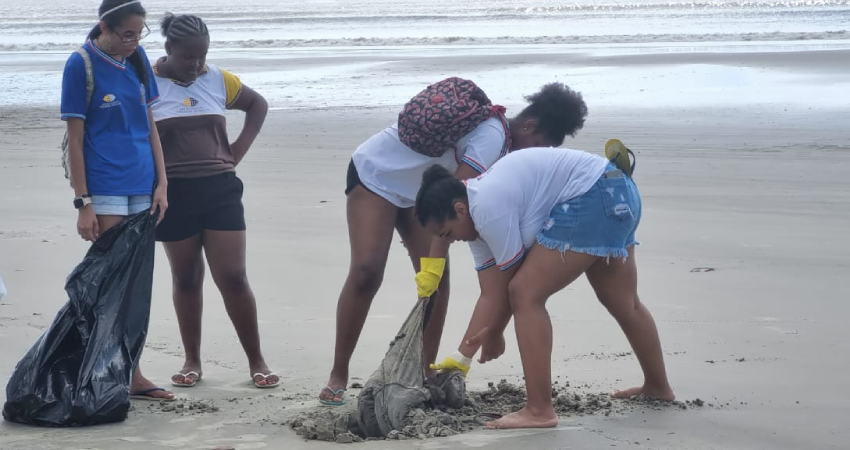
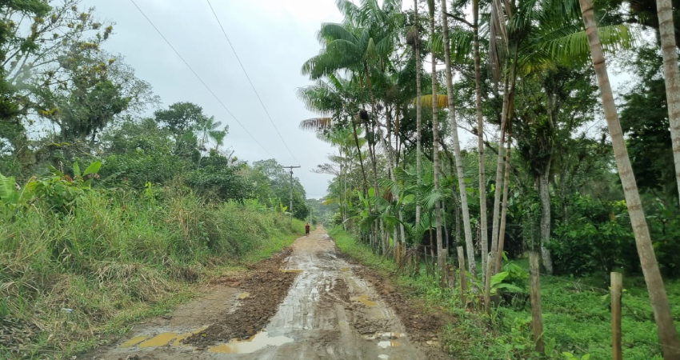
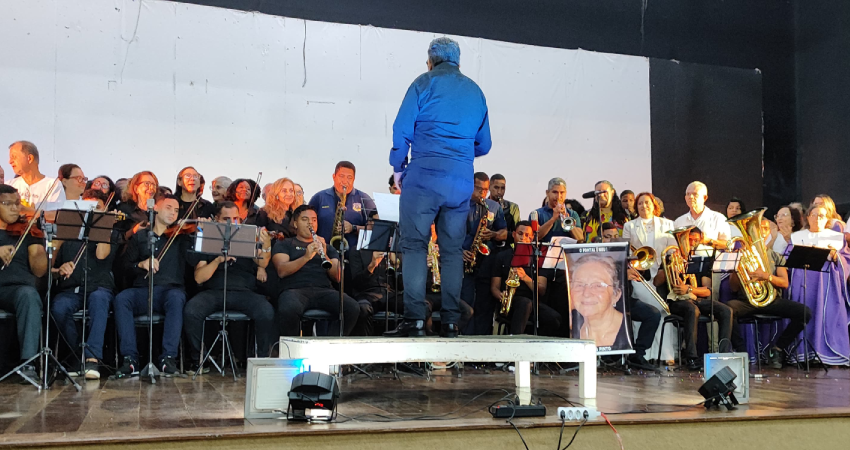
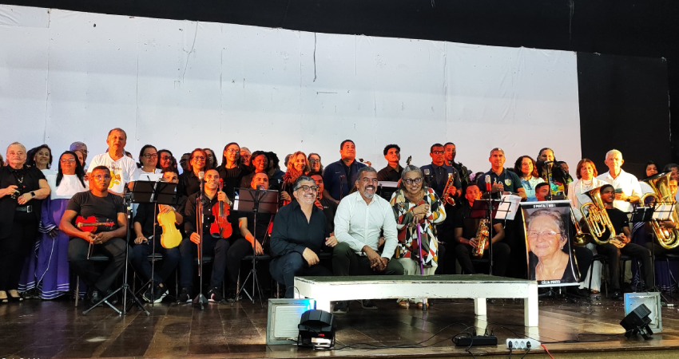
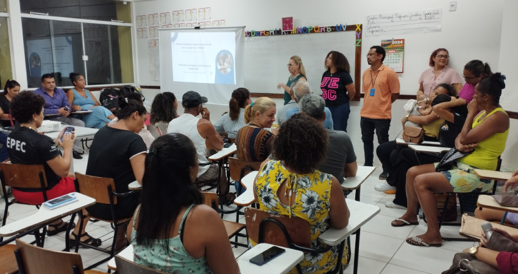
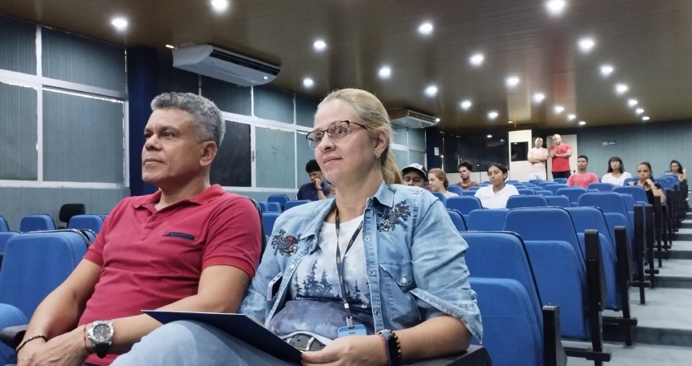

Educação
Inscrições Abertas Para As Atividades Da Universidade Aberta À Terceira Idade – UNATI /UESC
As atividades serão realizadas na modalidade presencial e podem se inscrever qualquer pessoa com idade a partir de 50 anos
Nos dias 30, 31 de julho, 1 e 2 de agosto de 2024 acontecem as inscrições para as atividades presenciais da UNATI (Universidade Aberta à Terceira Idade). A UNATI oportuniza a inserção do idoso no sistema educativo de modo que ele encontre, na educação, o eixo norteador para um novo aprendizado sobre envelhecer e de viver positivamente. Essa ação está vinculada ao Departamento de Filosofia e Ciências Humanas - DFCH, sob a coordenação dos docentes Marcos Rogério Neves e Maria Aparecida Santos de Aguiar.
Foto: Assessoria
O projeto propõe que a pessoa idosa aprenda a situar-se positivamente frente à vida, ao seu próprio envelhecimento e ao momento de mudanças aceleradas a que todos, independente da idade, estão submetidos, facilitando o seu acesso formal às atividades regulares nos cursos superiores sequenciais, além de outras opções para o seu desenvolvimento, na forma de cursos, oficinas e atividades artísticas, corporais e culturais.
Foto: Assessoria
Os documentos que deverão ser apresentados são RG, CPF, título de eleitor, comprovante de residência, 2 fotos 3x4 (recentes) e comprovante de vacinação COVID – 19 (com doses de reforço). As inscrições estão ocorrendo na Secretaria da Universidade Aberta à Terceira Idade, no Pavilhão Adonias Filho – Térreo. Clique aqui para acessar o edital completo.
Por: Regina Cássia Cardoso
Supervisão: Alencar Júnior
01 de agosto de 2024
Educação

FAEG celebra 20 anos da Lei Cultura Viva, com presença do reitor da UESC Alessandro Fernandes
FAEG-SUL realiza encontro territorial de cultura em celebração aos 20 anos da Lei Cultura Viva
No dia 25 de julho o FAEG-SUL (Fórum dos Agentes, Empreendedores e Gestores Culturais do Litoral Sul) realizou o Encontro dos Pontos de Cultura do Território Litoral Sul, com o tema: "Viva a Cultura Viva: 20 anos de conquistas e ações comunitárias", em uma celebração pelos 20 anos da Lei Cultura Viva.
Com esse encontro, realizado no Centro de Cultura Adonias Filho, em Itabuna, o FAEG-SUL promove o intercâmbio cultural e a valorização das manifestações artísticas locais, fomentadas pelos Pontos de Cultura do Território Litoral Sul, proporcionando um espaço de diálogo e reflexão sobre os avanços e desafios da Política Nacional de Cultura Viva no Brasil.
Foto: Ascom/Uesc
Celebrar, compartilhar e contribuir para o fortalecimento da nossa cultura viva, esse foi o foco central do encontro que teve em sua programação duas rodas de conversa: "Impactos e Perspectivas da Lei Cultura Viva nos Últimos 20 Anos", com o Ponto de Cultura Associação do Culto Afro Itabunense – ACAI; e "Função Social dos Espaços de Memórias", com o Ponto de Cultura Fundação Movimento de Corais Canto das Artes (Itapetinga). Além disso, houve uma diversidade de ações culturais dos pontos de cultura da região: exposição e venda de artesanatos, com o Coletivo Mulheres da Vila, de Itabuna; Dança Filmada com exibição do curta "Samba que Soma", dirigido por Victor Quixabeira, com o Ponto de Cultura Casa Ver Arte; Samba Duro, com o Ponto de Cultura Associação Cultural Tribo do Porto, de Itacaré; Oficina de construção de bonecas ancestrais, com o Ponto de Cultura Maravilhas, de Ilhéus.
O Reitor Alessandro Fernandes falou da alegria de estar participando do encontro e destacou a importância do Fórum e das parcerias entre instituições para fortalecimento da cultura na região: “Eu quero destacar essa parceria entre a AMURC e a UESC, no qual surge o FAEG, que é um dos fóruns de maior destaque aqui no nosso Programa AGIR. A prova disso é que foi através de uma demanda do FAEG que nós criamos o curso de especialização em gestão cultural na nossa universidade e que está caminhando para se transformar em mestrado em gestão cultural. Outra coisa importante é que o nosso ponto de cultura da UESC foi o primeiro da região”. E concluiu celebrando a cultura: “Parabenizo a cada um de vocês, porque vocês não estão aqui para comemorar apenas, vocês fazem a cultura na nossa região. Então, viva a nossa cultura, viva o FAEG!”
Foto: acessoria
Durante sua fala, a professora Áurea Maria - presidente de honra do FAEG, relembrou um importante fato de que o primeiro encontro dos pontos de cultura aconteceu na UESC, fortalecendo a histórica relação desta universidade com a educação e a cultura.
O FAEG-SUL é um dos fóruns que compõem o Programa AGIR 2.0 (Apoio Gerencial Institucional às Prefeituras) – uma ação integrada entre a UESC (Universidade Estadual de Santa Cruz), através da PROEX (Pró-Reitoria de Extensão) e a AMURC (Associação dos Municípios do Sul, Extremo Sul e Sudoeste da Bahia).
Por: Camila Neves
Supervisão: Alencar Júnior e Cintya Nobre
31 de Julho de 2024
Educação
Programa UPT/UESC promove evento formativo com foco na atuação docente crítica e emancipatória
O encontro formativo reuniu professores e monitores com o objetivo de fortalecer a atuação docente crítica e emancipatória, abordando práticas pedagógicas e estratégias de preparação para os processos seletivos de ingresso ao ensino superior
O Programa Universidade Para Todos (UPT) da Universidade Estadual de Santa Cruz (UESC) promoveu, em 16 de julho de 2024 um encontro formativo destinado a capacitar professores e monitores, abordando práticas pedagógicas e estratégias de preparação para os processos seletivos de ingresso ao ensino superior. O evento teve como objetivo inspirar e motivar professores e monitores a assumirem um compromisso social com a juventude que almeja ingressar no ensino superior.
A atuação docente de forma crítica e emancipatória é um conceito que busca transformar a prática educacional em uma ferramenta de emancipação e mudança social. Esta abordagem é inspirada por pensadores como Paulo Freire, que defende uma educação que vá além da simples transmissão de conhecimento, promovendo a conscientização e a capacidade crítica dos estudantes. Com a intenção de transformar a educação em um processo libertador, em que os estudantes sejam preparados para serem agentes de mudança na sociedade.
Foto: Ascom/Uesc
A universidade, dentro desse paradigma, é vista como um espaço potencial para a transformação social, para que isso seja uma realidade. É essencial transformar a universidade em um espaço acessível a todos, especialmente, aos grupos historicamente marginalizadas.
Medidas de acessibilidade financeira, como bolsas e auxílios, melhoria da qualidade do ensino, investimentos em infraestrutura e recursos e a promoção da inclusão e diversidade, são fundamentais para criar um sistema de ensino superior acessível e de alta qualidade para todos.
Foto: acessoria
O evento ocorreu no Auditório de Direito no Pavilhão Waldir Pires, contou com uma programação que incluiu palestras, debates e dinâmicas de grupo. A cerimônia de abertura contou com a presença de representantes da Reitoria, Pró-Reitorias de Extensão e de Graduação, além de membros da coordenação geral do Programa UPT na Bahia e na UESC.
A conferência de abertura, intitulada "Atuação docente crítica e emancipatória: a Universidade como um sonho possível", foi ministrada pelos professores Dr.º Penildon Silva, Me. José Brito de Carvalho e Me. Patrícia Matos, e mediada pela Profa. Drª. Lilian Moreira Cruz. No período da tarde, um ciclo de debates abordou as experiências e histórias de egressos do programa UPT rumo à universidade, com a participação da monitora professora Priscila Paredes, do Mestre Jeferson Evangelista e da Doutoranda Elionai Mendes da Silva, e mediação da Profa. Drª. Viviane Borges Dias e do Prof. Drº. Roger Magalhães da Silva.
Os participantes tiveram a oportunidade de trocar experiências e reafirmar seu papel transformador na sociedade, reforçando o compromisso de capacitar os jovens a alcançar o sonho do ensino superior e contribuir para a construção de uma sociedade mais justa e igualitária.
Por: Allana Almeida e Lis Fonseca
Supervisão: Alencar Júnior
22 de Julho de 2024
Eventos
Ferradas Run Homenageará o autor Jorge Amado
A Universidade Estadual de Santa Cruz (UESC), em parceria com a Associação dos Municípios da Região Cacaueira (AMURC), está apoiando a corrida FERRADAS RUN, que homenageia o renomado escritor Jorge Amado
Foto: Assessoria
A Universidade Estadual de Santa Cruz (UESC), por meio da Pró-Reitoria de Extensão (PROEX), em parceria com a Associação dos Municípios da Região Cacaueira (AMURC), está apoiando uma homenagem ao escritor Jorge Amado promovida pelo Races Run. O evento especial será dedicado ao renomado escritor Jorge Amado e à sua amada terra natal. Mais do que uma simples corrida, será uma celebração da vida e da obra do maior autor brasileiro. Ao cruzar a linha de chegada, os participantes não apenas completarão uma prova, mas também se juntarão a uma vibrante homenagem a Jorge Amado. Além disso, receberão uma medalha que simboliza a rica herança literária do autor - um verdadeiro tesouro para os entusiastas da corrida e da cultura brasileira.
A corrida, denominada FERRADAS RUN, acontecerá em Ferradas, município de Itabuna, Bahia, no dia 11 de agosto de 2024, com início às 07:00 horas. As inscrições estão disponíveis através do site www.races.com.br/ferradasrun. Os primeiros 20 membros da comunidade Uesquiana (servidores e estudantes) que se inscreverem terão desconto na taxa de inscrição.
Por: Regina Cássia Cardoso
Supervisão: Alencar Júnior
18 de Julho de 2024
Extensão Universitária
UESC sedia o Núcleo da Escolinha de Triathlon Formando Campeões
A Escolinha de Triathlon Formando Campeões nasceu em 2015, em Curitiba-PR, cidade natal de seu idealizador, padrinho e gestor, o triatleta olímpico Juraci Moreira, medalhista pan- americano, hexacampeão brasileiro da modalidade e três vezes representante olímpico
Pioneiro na Bahia, o Núcleo da UESC foi concebido em uma parceria feita entre Juraci Moreira e os professores Alberto Kruschewsky e Josué Brandão, que coordenam o Projeto Vivenciando Olimpíada e Paralimpíada. O projeto vem fazendo um trabalho voltado aos estudantes da universidade, de qualquer área, egressos do curso de Educação Física e profissionais da região. Stephanie Cartagena, egressa do curso de Educação Física da UESC, e Bruno Marques, estudante do curso, atuam como coordenadora e estagiário, respectivamente. Ambos têm formação como Oficiais Técnicos pela Confederação Brasileira da modalidade, disponibilizada pelo projeto, sendo que Stephanie possui a certificação da World Triathlon, instituição que rege o Triathlon mundialmente, pois o projeto atua em também competições internacionais.
Foto: acessoria UESC
A Escolinha de Triathlon Formando Campeões atende o município de Ilhéus, crianças que em sua grande maioria são provenientes da comunidade do Salobrinho, bem como dos bairros Teotônio Vilela, Nossa Senhora da Vitória, Nelson Costa, Conquista, São Domingos, Condomínio Sol e Mar, Morada do Porto, Banco da Vitória e Malhado. No primeiro trimestre de 2024, a escolinha recebeu a quantidade de 50 alunos, sendo 94% destes oriundos da rede pública de ensino. Foram 114 aulas ministradas, 228 horas de atividade física e 1482 kits de lanche distribuídos. De acordo com os indicadores sociais, o número de meninos foi superior ao de meninas, 64% e 36%, respectivamente, e o nível de escolaridade majoritariamente contemplado foi o Ensino Fundamental I e II. Os indicadores socioeconômicos apontaram que mais da metade dos alunos possuem renda familiar de até 1 salário mínimo e que 46 dos 50 recebem benefício social. Por fim, os indicadores de saúde revelaram que 8 crianças estavam abaixo do peso, 37 crianças mantiveram o peso normal, 5 crianças se encontravam em sobrepeso e nenhuma criança foi declarada obesa.
Foto: Assessoria
Os dados ressaltam a importância do projeto, o empenho dos professores coordenadores e dos estudantes envolvidos, o apoio da PROEX e a confiança da comunidade que acolheu essa proposta de incentivo ao esporte como uma ação responsável por “apontar aos jovens um caminho próspero e saudável para a vida adulta, com educação, organização, disciplina, respeito e todas as ferramentas necessárias para que se tornem campeões em qualquer área em que escolherem atuar.” (Escolinha de Triathlon Formando Campeões, 2024).
Por: Regina Cássia Cardoso
Supervisão: Alencar Júnior
15 de Julho de 2024
Extensão Universitária

Curricularização da Extensão atende a Escola Fé e Alegria no município de Ilhéus
A iniciativa foi planejada a partir da integração das disciplinas Plantas Medicinais e Plantas Alimentícias Não Convencionais (PANC), ambas ministradas pela Dr.ª Larissa Costa, professora vinculada ao Departamento de Ciências Biológicas
A Escola Fé e Alegria, situada no bairro Nossa Senhora da Vitória, em Ilhéus, participou no primeiro semestre de 2024 de duas atividades de extensão coordenadas pela professora Larissa Costa e pelos estudantes das disciplinas Plantas Medicinais e Plantas Alimentícias Não Convencionais (PANC). A primeira atividade envolveu a disciplina Plantas Medicinais, que focou na reforma da horta da escola. As mudas foram cultivadas no horto de plantas medicinais da UESC e, no dia agendado, ocorreu o plantio de aproximadamente sete espécies de plantas medicinais e duas espécies de PANC na escola, contando com a participação das crianças.
Foto: acessoria UESC
A segunda atividade esteve relacionada com a disciplina PANC e propôs a introdução das alimentícias não convencionais, que foram previamente plantadas durante a primeira atividade, no cardápio da escola. A segunda atividade foi pensada como incentivo para a reeducação alimentar e realizada em duas etapas. Na primeira etapa o risoto que já fazia parte do cardápio da escola foi enriquecido com duas PANC, o espinafre e a língua de vaca, e oferecido para todas as crianças da escola. Na segunda etapa a atividade foi mais dinâmica, com menos alunos, fruindo da preparação do brigadeiro de capim santo e do suco de vinagreira.
Foto: Acessoria UESC
Outro destaque importante dessa iniciativa foi a criação de um livreto com receitas testadas e aprovadas pelos estudantes da disciplina, servindo assim de referência para a elaboração de cardápios mais saudáveis beneficiados com a utilização das plantas alimentícias não convencionais.
Por: Regina Cássia Cardoso
Supervisão: Alencar Júnior
10 de Julho de 2024
Empreendedorismo
E.Q Play realiza mais uma edição com Estudantes de Engenharia Química da UESC
Em parceria com a Veracel Celulose, o evento foi uma edição especial focada no aprendizado e inovação na indústria de papel e celulose com a imersão prática através de minicursos e palestras
Durante o mês de maio, o projeto de extensão E.Q Play, em colaboração com a Veracel Celulose, realizou uma edição especial focada na indústria de Papel e Celulose. O evento tratou-se de uma competição online, composta por minicursos, palestra, visita técnica e um Quiz de perguntas e respostas. A competição proporcionou aos(às) estudantes de Engenharia Química da UESC e à comunidade externa uma imersão no universo da indústria de papel e celulose através de minicursos e palestras ministrados por profissionais da Veracel, abordando temas que foram desde a produção de celulose até inclusão e diversidade. Ao final das etapas do jogo, seis estudantes concorreram a uma vaga de estágio na empresa.
As coordenadoras do projeto, Jéssica Barbosa e Geovana Pires, destacam que o uso de jogos como metodologia ativa oferece benefícios acadêmicos e a oportunidade de estágio em indústrias químicas. Além de aprimorar habilidades técnicas, "os(as) participantes discutem temáticas tais como gênero, relações étnico raciais e direitos humanos”, afirmam as professoras.
Foto: Aldair Silva, estudante campeão da edição. Projeto E.Q. Play
Aldair Silva, participante e campeão da edição, ressaltou a importância do contato direto com profissionais da área e do debate das relações étnico-raciais e de gênero. O estudante de Engenharia Química da UESC também mencionou a importância da visita técnica à empresa Veracel e do prêmio de estágio como oportunidades cruciais para ingressar no mercado de trabalho. "Recomendo que participem do E.Q Play, não apenas pelo prêmio, mas pelas experiências enriquecedoras ao longo do projeto. Nas duas edições em que participei, amadureci muito e hoje me vejo como um profissional mais capacitado," afirmou Aldair. Ele ainda destacou a dificuldade de um engenheiro químico em formação ingressar no mercado de trabalho na região e como o projeto E.Q. Play cria oportunidades. "Vai ser um desafio completamente novo para mim. As expectativas estão altas, e espero poder ser efetivado após a conclusão do estágio e da formatura".
Foto: Projeto E.Q. Play
As professoras afirmam que “os feedbacks dos(as) alunos(as) são muito gratificantes, especialmente daqueles(as) que foram premiados(as) com estágios, representando um importante passo para suas vidas profissionais.” Elas destacam que o E.Q Play é um projeto de extensão da UESC que busca aprimorar a formação dos estudantes de Engenharia Química, oferecendo módulos de formação disponíveis de forma online que são acessíveis também à comunidade externa. Os conteúdos abordam temas específicos da Engenharia Química, empreendedorismo, inovação e humanidades, elaborados em parceria com empresas e profissionais das áreas das humanidades.
A UESC, por meio da Pró-reitoria de Extensão, parabeniza a equipe e os participantes de mais uma edição do E.Q. Play, saudando a todos pelo trabalho realizado e o compromisso com a educação de qualidade e a formação de futuros profissionais. A universidade reconhece que o esforço conjunto de alunos, professores, técnicos e parceiros é fundamental para fortalecer o vínculo entre academia, comunidade e indústria, promovendo o crescimento pessoal e profissional de todos os envolvidos.
Por: Allana Almeida
Supervisão: Alencar Júnior
18 de Junho de 2024
Cultura
A itinerância continua com mais um encontro, e o FAEG-SUL chegou ao município de Santa Luzia
FAEG-SUL realiza Encontro Territorial de Cultura para formar os gestores municipais na consolidação dos Sistemas de Cultura de seus municípios
O FAEG-SUL (Fórum de Agentes, Empreendedores e Gestores Culturais do Território Litoral Sul) segue com sua itinerância e através dos seus encontros mensais tem levado formação, integração e fortalecimento da rede de cultura para os quatro cantos do território. Desta vez a caravana desembarcou no município de Santa Luzia, no dia 13 de junho.
Com o tema “Cultura e Cidadania” esse encontro teve em sua programação um workshop sobre elaboração de projetos, com Victor Aziz; orientação sobre implantação de Pontos de Cultura, com Maria Áurea; e formação sobre prazos dos editais de cultura, com a mestre Lainha.
Foto: Assessoria UESC
A passagem do FAEG-SUL por Santa Luzia foi permeado por diversos momentos culturais, com apresentação da Fanfarra Marcial FANCEJA, do grupo Associação Cultural Capoeira Raça, com o mestre Léo; Boi Estrela, e muito mais. Tudo isso com a presença de gestores e fazedores de cultura, além de estudantes da rede pública de ensino do município, em uma importante relação de parceria entre cultura e educação.
Foto: Assessoria UESC
O FAEG-SUL é um dos fóruns que compõem o Programa AGIR 2.0 (Apoio Gerencial Institucional às Prefeituras) – uma ação integrada entre a UESC (Universidade Estadual de Santa Cruz), através da PROEX (Pró-Reitoria de Extensão) e A AMURC (Associação dos Municípios do Sul, Extremo Sul e Sudoeste da Bahia).
Por: Camila Neves
Supervisão: Alencar Júnior
18 de Junho de 2024
Meio Ambiente
Projeto Praia Limpa Realiza Ações de Limpeza em Ilhéus e Uruçuca e coletam 600 kg de resíduos sólidos
Como parte das comemorações da Semana do Meio Ambiente, no dia 08 de Junho, o projeto realizou duas importantes atividades de limpeza nas praias de Ilhéus e Uruçuca. Com a participação de estudantes, moradores locais e turistas, foram retirados cerca de 600 kg de resíduos sólidos das praias do Malhado e Sargi
No dia 08 de junho, o projeto de extensão Praia Limpa da UESC promoveu duas significativas atividades de limpeza nas praias, em celebração à Semana de Meio Ambiente. A primeira ação ocorreu às 8h na Praia do Malhado, em Ilhéus. Esta iniciativa contou com a colaboração dos discentes do CEEP do Chocolate Nelson Schaun, sob a orientação dos biólogos e professores Emerson Lucena e Sebastiana Menezes. Ao fim, a coleta resultou na retirada de mais de 400 kg de resíduos sólidos.
A segunda ação de limpeza ocorreu às 15h, do mesmo dia, na Praia do Sargi, em Uruçuca. Esta atividade foi realizada em parceria com o biólogo Magno Ferraz Filho, moradores locais e turistas da região. A colaboração de todos os participantes resultou na remoção de cerca de 200 kg de resíduos sólidos da praia.
Foto: Assessoria UESC
Para o coordenador do projeto, professor Emerson Lucena, “a população ainda não tem consciência, nem sensibilização a respeito do problema que é jogar o lixo de maneira inadequada e não dar o destino correto”. Nesse sentido, o projeto Praia Limpa trabalha com uma ação simbólica de limpeza das praias, cujo objetivo é chamar a atenção para o problema sério do descarte irregular de resíduos sólidos, e que “a intenção não é limpar a praia por completo, mas provocar uma reflexão e sensibilizar a população sobre a importância de descartar o lixo corretamente."

Foto: Assessoria UESC
O professor aponta ainda que a participação da comunidade é um ponto forte do projeto, atraindo tanto estudantes interessados em aprender e contribuir quanto moradores e turistas que se envolvem voluntariamente. “Os estudantes participam porque têm interesse na causa e curiosidade sobre o assunto. A comunidade local, muitas vezes, se junta ao ver a ação acontecendo”, explica Lucena.
Além de limpar as praias, o projeto Praia Limpa tem como um de seus objetivos estimular outras iniciativas similares. “O principal impacto dessa atividade é inspirar outras pessoas a criar projetos de limpeza de praias em outros lugares. Aqui em Ilhéus, temos o Praia Limpa Surf Limpo e o Grupo de Amigos da Praia (GAP), que foram baseados no nosso projeto”, destaca Lucena. O projeto Praia Limpa, que celebra 25 anos em julho, possui uma importância histórica e socioambiental significativa na região.
Atividades como essas, do Projeto de Extensão Praia Limpa, não só contribuem significativamente para a preservação ambiental, como também reforçaram a importância da conscientização e do envolvimento comunitário na proteção das praias. A Uesc expressa seu profundo agradecimento aos educadores ambientais envolvidos e reitera sua oposição à privatização das praias, defendendo o acesso livre e a conservação dos espaços naturais.
Por: Allana Almeida
Supervisão: Alencar Júnior
18 de Junho de 2024
Educação
PROEX Participa de Reunião com Agricultores do Assentamento João Amazonas em Uruçuca-BA
A convite da COOPAFEBA, a Proex se reuniu com o assentamento em uma palestra sobre Certificação Participativa, ministrada pelo agroecologista Francisco Villas, além disso, foi realizado o cadastro dos assentados para inclusão em projetos governamentais
No dia 09 de junho, a Proex, por meio da Coordenação de Integração Comunitária (Coinc), participou de uma reunião significativa com os agricultores e agricultoras do Assentamento João Amazonas, localizado no município de Uruçuca-BA. A reunião, promovida a convite da Cooperativa dos Assentados da Reforma Agraria e Agricultores Familiares do Estado da Bahia (COOPAFEBA), teve como objetivo principal discutir a Certificação Participativa. Durante o encontro, o agroecologista Francisco Villas, membro da Rede de Agroecologia Povos da Mata, ministrou uma palestra detalhada sobre o tema, explicando seus benefícios e como implementar essa certificação na prática.
A atividade também focou no cadastro dos assentados e das assentadas, visando à inclusão dos mesmos nos diversos projetos dos governos estadual e federal. A iniciativa visa facilitar a esses agricultores o acesso ao crédito e ao financiamento governamental, proporcionando melhores condições para o desenvolvimento agrícola sustentável e familiar.
Foto: Assessoria UESC
A comunidade local participou ativamente das atividades realizadas, e promoveram um almoço coletivo para os visitantes. O encontro marca o fortalecimento dos laços comunitários e proporciona um momento de confraternização e troca de experiências entre universidade e comunidade. O engajamento e participação ativa da comunidade nos projetos de certificação e inclusão são fundamentais para o fortalecimento da agricultura sustentável e familiar, bem como, para a melhoria das condições de vida no Assentamento João Amazonas.

Foto: Assessoria UESC
A comunidade local participou ativamente das atividades realizadas e promoveu um almoço coletivo para os visitantes. O encontro marcou o fortalecimento dos laços comunitários e proporcionou um momento de confraternização e troca de experiências entre universidade e comunidade. O engajamento e a participação ativa da comunidade são fundamentais para o fortalecimento da agricultura sustentável e familiar, bem como para a melhoria das condições de vida no Assentamento João Amazonas.
A Uesc, por meio da Proex, expressa seus sinceros agradecimentos aos assentados e as assentadas pela acolhida carinhosa e pela troca enriquecedora, e reafirma seu compromisso com o apoio ao desenvolvimento local e à promoção da agroecologia, trabalhando em parceria com organizações locais e governamentais para fomentar práticas sustentáveis e inclusivas na região.
Por: Allana Almeida
Supervisão: Alencar Júnior
18 de Junho de 2024
Educação
Educação inclusiva é tema do VIII Simpósio de Pedagogia
O evento aconteceu trouxe um debate amplo, de forma gratuita e aberta ao público acerca da acessibilidade e inclusão
Entre os dias 27 e 29 de maio, a Universidade Estadual de Santa Cruz (UESC) sediou o VIII Simpósio de Pedagogia, com o tema "Educação Inclusiva: desafios, tensões e perspectivas". O evento contou com apresentações culturais de dança realizadas por ex-alunos da UESC e trouxe à tona questões cruciais sobre a inclusão no ambiente educacional.
A abertura do simpósio foi marcada pela fala da Coordenadora do evento, Professora Lílian Moreira, que ressaltou o compromisso político da educação na redução das desigualdades. "A educação é uma ferramenta fundamental para promover a equidade social", destacou a professora. O Pró-Reitor de Extensão, Cristiano Bahia, também enfatizou a importância da integração entre pesquisa, extensão e graduação, além de sublinhar a relevância da formação dialógica na abordagem educativa para uma sociedade mais inclusiva.
Foto: Assessoria UESC
O VIII Simpósio de Pedagogia discutiu os enfrentamentos e desafios da educação inclusiva que podem dificultar sua implementação eficaz. A Professora Genigleide, uma militante da causa, afirmou que "a educação inclusiva deve ser o pilar da educação, forçando assim que ela saia do papel". Segundo ela, a inclusão vai além das adaptações no currículo, metodologia de ensino, avaliação e infraestrutura escolar, devendo promover uma cultura de respeito, aceitação e valorização da diferença.
Foto: Assessoria UESC
Durante o evento, o Reitor Alessandro Fernandes de Santana abordou os esforços contínuos da UESC para se tornar uma instituição mais inclusiva. O Reitor mencionou a necessidade de melhorar a acessibilidade no campus, citando a construção de um novo Restaurante Universitário em um local mais acessível, projeto que já está em fase de estudo pela Prefeitura do Campus.
A UESC compreende a importância vital da educação inclusiva para o desenvolvimento social tanto local quanto nacional. Reconhecendo que a inclusão educacional é essencial para construir uma sociedade mais justa e equitativa, a universidade reafirma seu compromisso em implementar ações concretas para atender essas demandas. Entre as iniciativas destacadas estão a melhoria da infraestrutura para acessibilidade, a promoção de uma formação acadêmica dialógica e inclusiva, e o incentivo a práticas pedagógicas que valorizem a diversidade.
Por: Lis Fonseca
Supervisão: Alencar Júnior
12 de Junho de 2024
Educação
NAF-Uesc receberá certificação da Receita Federal
Evento acontecerá dia 11 de junho, em Salvador
Foto: Assessoria UESC
Os estudos e serviços realizados pelo Núcleo de Apoio Contábil e Fiscal (NAF) da Universidade Estadual de Santa Cruz (Uesc), vinculado ao Departamento de Ciências Administrativas e Contábeis (DCAC), vai receber certificação pela 5ª Região Fiscal da Receita Federal do Brasil. O evento acontece no dia 11 de junho, na Superintendência Regional da Receita Federal, em Salvador, em reconhecimento aos Núcleos de Apoio Contábil e Fiscal dos Estados da Bahia e Sergipe pelos serviços prestados no ano de 2023.
O NAF-Uesc será certificado em duas categorias: Diamante, que se define pelos altos estudos e inovações dos NAFs. O Núcleo da Uesc produziu e apresentou, no período, dois trabalhos científicos em eventos conceituados: o Resumo Expandido "Contribuição Social e Acadêmica do NAF", escrito pelos discentes Gabriela Machado e Raphael Conrado e pelos docentes Genesy Martins e Iracildo Silva, apresentado no III Congresso Internacional de Educação Empreendedora e Cidadania; e o Resumo "Impacto e alcance do NAF Uesc: um olhar sobre suas ações e resultados", produzido pelos docentes Cacá Gonçalves, Genesy Martins, Iracildo Silva e Luzilea Brito (UFSB), e que foi apresentado no V Congresso de Extensão da Universidade Federal do Sul da Bahia.
A outra certificação é na categoria Prata, que considera o número de atendimentos prestados pelos NAFs anualmente. Em 10 meses, o NAF-Uesc atendeu a 1.574 cidadãos, no ano de 2023. O coordenador do projeto, professor Genesy Martins, acompanhado pela docente e colaboradora Maria Clara Magalhães e os voluntários Eric Duarte, João Carvalho e Raphael Conrado, participarão do evento de certificação.
O projeto do Núcleo de Apoio Contábil e Fiscal é desenvolvido pela Receita Federal do Brasil em parceria com as Instituições de Ensino Superior, a fim de proporcionar aos acadêmicos a aplicação dos conhecimentos teóricos e também prestar serviços contábeis, fiscais e jurídicos gratuitos para pessoas físicas e jurídicas de menor poder aquisitivo. O reitor Alessandro Fernandes destaca que o NAF-Uesc é um importante projeto de extensão que contribui para o desenvolvimento acadêmico dos estudantes, unindo os conteúdos abordados em sala de aula às práticas realizadas pelo projeto.
Por:
Ascom
10 de Junho de 2024
Educação
Encontro de Egressos do Curso de Iniciação à Regência Coral e Instrumental na UESC
I Encontro de Alunos Egressos do Curso de Iniciação à Regência Coral e Instrumental ocorreu no Auditório Paulo Souto
A Universidade Estadual de Santa Cruz (UESC), acontece um evento especial que reunirá egressos do curso de Regência Musical numa espetacular cantata. Este show celebrou o talento e a trajetória dos antigos alunos, promovendo a música coral e instrumental com apresentações emocionantes e de alta qualidade.
Este evento com egressos do curso de Regência Coral e Instrumental da UESC foi uma excelente oportunidade para celebrar a música e o talento dos ex-alunos, além de fortalecer a comunidade acadêmica e cultural. Através de uma programação bem estruturada e de uma produção cuidadosa, o evento pode se tornar um marco anual na agenda da universidade, promovendo a música e a educação artística.

Foto: Assessoria UESC
A programação contou com apresentações do Coral da Santa Casa de Itabuna, da Banda da Guarda Civil Municipal de Itabuna, do Coral Semente do Amanhã, do Coral Família Pinto, do Coral da UNATI, do Coral da OAB de Ilhéus, do Coral Mokiti Okada de Ilhéus/ Coral Tons de Alegria, do Coral Canto e Encanto, Coral Jerusalém, Coral Voz da Vitória, Coral Cantari e o Camerata Gospel.

Foto: Assessoria UESC
A Cantata dos Egressos do Curso de Iniciação de Regência Coral e Instrumental da UESC foi uma noite memorável, cheia de música e emoção, destacando o impacto positivo da formação oferecida pela universidade na carreira de seus alunos.
Por: Lis Fonseca
Supervisão: Alencar Júnior
07 de Junho de 2024
Eventos
PROEX/COINC participou do 1º Seminário do Curso Técnico em Meio Ambiente numa escola de campo em Taboquinhas
O evento ocorreu no Colégio Estadual do Campo Professora Lúcia Maria Batista da Silva em Taboquinhas
O 1º Seminário do Curso Técnico em Meio Ambiente com o tema: “Desenvolvimento sustentável: Rumo aos objetivos globais”, é uma iniciativa fundamental para discutir e promover o desenvolvimento sustentável, contribuindo para a formação de uma comunidade mais consciente e proativa na busca por um futuro mais sustentável.
No dia 28 de maio, o Coordenador da Coordenação de Integração Comunitária (COINC), o prof. Emerson Lucena, ministrou uma palestra com a temática: A importância da Educação Ambiental para a preservação do meio ambiente. A Educação Ambiental (EA) é fundamental para a preservação do meio ambiente, pois promove a conscientização e o engajamento da sociedade em práticas sustentáveis.
Foto: Assessoria UESC
A EA é uma ferramenta poderosa para a preservação do meio ambiente. Ao aumentar a conscientização, formar valores, desenvolver habilidades, engajar a comunidade, apoiar políticas públicas e promover a sustentabilidade a longo prazo, a EA capacita indivíduos e comunidades a tomar medidas efetivas para proteger o nosso planeta. Investir em Educação Ambiental é, portanto, investir em um futuro mais sustentável, equilibrado e justo para todos.
Foto: Assessoria UESC
A tempo parabenizamos a iniciativa do Colégio Estadual do Campo Professora Lúcia Maria Batista da Silva (CECPLMBS), em discutir um tema que é tão importante para a sociedade, e ao participar desse evento reafirmamos o compromisso da Universidade Estadual de Santa Cruz (UESC), com a promoção da conscientização ambiental na construção de um futuro mais sustentável, não apenas para a comunidade universitária, mas para toda a sociedade
Por: Lis Fonseca
Supervisão: Alencar Júnior e Emerson Lucena
06 de Junho de 2024
Meio Ambiente
Projeto de Extensão Horto Florestal Realiza Ação de Doação de Árvores na UESC
Com a distribuição de centenas de mudas nativas e plantas medicinais, a iniciativa destacou, no Dia Mundial do Meio Ambiente, a importância de ações como o plantio de árvores para a preservação ambiental. A ação foi um sucesso e superou as expectativas dos organizadores
Na última quarta-feira, dia 05 de junho, o projeto de Extensão Horto Florestal da UESC promoveu uma ação em comemoração ao Dia Mundial do Meio Ambiente, doando árvores para a comunidade local. A iniciativa teve como objetivo principal destacar a importância dessa data e mostrar que pequenas ações, como o plantio de árvores, são essenciais para a preservação do meio ambiente e a conscientização sobre a arborização urbana.
A doação ocorreu no campus da UESC, onde foram distribuídas diversas mudas de árvores nativas, incluindo 600 mudas de Pau-Brasil e 270 plantas medicinais, como Babosa, Boldo, Cidreira e Hortelã Miúdo. As mudas foram preparadas e cultivadas por alunos, professores e técnicos engajados no projeto, que destacaram a importância de plantar árvores para a melhoria da qualidade de vida. A ação contou com a participação ativa da comunidade, que pôde levar para casa gratuitamente as mudas e aprender mais sobre o cultivo e cuidados necessários para o seu crescimento saudável.
Foto: Assessoria UESC
A coordenadora do projeto, Professora Larissa Corrêa, destacou que a iniciativa “é muito importante e vital para a preservação e recuperação do meio ambiente”. Ela ressaltou que não se trata apenas de doar árvores, mas também de “contribuir para mitigar as mudanças climáticas, conservar a biodiversidade, ajudar a controlar a erosão e regular o ciclo hidrológico, além de melhorar a qualidade do ar”. Segundo a professora, “o plantio de árvores é fundamental para a manutenção da saúde do planeta” e ações como essa são essenciais para garantir um futuro sustentável para as próximas gerações.
O Horto de Plantas Medicinais da UESC é um projeto de extensão reconhecido por suas ações contínuas de preservação e educação ambiental, sempre buscando envolver a comunidade acadêmica e local em práticas sustentáveis. Entre as atividades promovidas pelo projeto estão plantios em áreas degradadas e visitas educativas para escolas, ONGs, associações e grupos comunitários, como forma de retribuir à sociedade, compartilhando o conhecimento sobre as espécies medicinais cultivadas.
Foto: Assessoria UESC
A iniciativa foi um sucesso. “Ficamos surpresos com o interesse e a procura, que superou nossas expectativas. Pensávamos que a distribuição duraria o dia todo, mas até as 13h já tínhamos distribuído todas as mudas disponíveis. Ficamos felizes com essa parceria, na qual produzimos as mudas e todas essas pessoas ajudarão a plantar e distribuir em diferentes locais”, afirmou Larissa.
A UESC e a Proex reforçam seu compromisso com a sustentabilidade e a educação ambiental, incentivando a participação de todos em ações que visam a preservação do meio ambiente e a construção de uma sociedade mais consciente e responsável.
Por: Allana Almeida
Supervisão: Alencar Júnior
06 de Junho de 2024
Cultura
Em parceria com a SECULT, FAEG-SUL realiza encontro formativo para gestores municipais de cultura
FAEG-SUL realiza Encontro Territorial de Cultura para formar os gestores municipais na consolidação dos Sistemas de Cultura de seus municípios
O Fórum de Agentes, Empreendedores e Gestores Culturais - FAEG-SUL, realizou mais um Encontro Territorial de Cultura, com foco nos Sistemas Municipais de Cultura e Política de Fomento Aldir Blanc, no intuito de formar os gestores municipais, em vista das novas políticas de cultura, implementadas pelo Governo Federal.
Realizado no dia 23 de maio, na UESC, o encontro trouxe em sua programação diversas pautas pertinentes às políticas de fomento cultural para o ano de 2024, entre elas o processo de certificação e relatos de vivências dos Pontos de Cultura; planejamento de execução da PNAB; além de oficinas nas áreas de elaboração de projetos, prestação de contas e conselhos municipais de Cultura.
Foto: Assessoria UESC
Este encontro foi realizado em parceria com a SECULT (Secretaria Estadual de Cultura), contando com a presença de diversos gestores e agentes culturais dos municípios pertencentes aos territórios Sul e Litoral Sul baiano, no intuito de articular/ fortalecer a rede de fazedores de cultura do território, assim como, formar os agentes e gestores municipais na construção e/ou consolidação dos Sistemas de Cultura de seus municípios.
Foto: Assessoria UESC
O FAEG-SUL é um dos fóruns que compõem o Programa AGIR 2.0 (Apoio Gerencial Institucional às Prefeituras) – uma ação integrada entre a UESC (Universidade Estadual de Santa Cruz), através da PROEX (Pró-Reitoria de Extensão) e A AMURC (Associação dos Municípios do Sul, Extremo Sul e Sudoeste da Bahia).
Por: Camila Neves
Supervisão: Alencar Júnior
05 de Junho de 2024
Eventos
PROEX através do Agir 2.0 realiza evento sobre Licitações Municipais com apoio da AMURC e do Fórum de Procuradores
A PROEX através do Agir 2.0 em parceria com a AMURC e o Fórum de Procuradores realizam evento formativo sobre Licitações
Um Levantamento realizado pelo Tribunal de Contas da Bahia apontou que, apenas 110 dos 830 jurisdicionados pesquisados afirmam utilizar um Plano de Contratações Anual, os outros responderam não ter adotado tal instrumento. Apesar de não ser obrigatório, seu uso demonstra boa prática de governança, haja vista que permite a racionalização das contratações públicas, aumentando a eficiência, proporcionando ganhos de escala, e demonstra um alinhamento com o planejamento estratégico e com as Leis Orçamentárias.
Foto: Assessoria
O PCA garante maior transparência e possibilita o devido controle social das políticas públicas e dos recursos nelas investidos. Para o especialista Gustavo Leite Caribé Checcucci “o plano de contratação anual tem com a finalidade mitigar riscos na contratação, é o olhar estratégico sobre o que eu vou contratar para o próximo ano”. Checucci aduz que “quando se faz o planejamento prévio, você consegue olhar o que se tem de orçamento e as suas prioridades para o PCA, sendo um dos requisitos colocar na planilha uma escala de prioridade máxima, média e baixa, e cada secretaria envia a sua planilha levando em consideração essa escala, facilitando assim que o comprador, ao olhar o arquivo compilado, saiba das demandas em escala de importância. Inclusive, recomendo em consultorias o uso do modelo disponibilizado pela AGU, que é ótimo e adaptável”.
Para Iracema Aranha representante da AMURC, o evento tem um cunho esclarecedor e formativo, principalmente pelo momento que todos os municípios estão enfrentando com a aproximação das eleições municipais, onde a prestação de contas é crucial para finalizar o exercício.
Foto: Assessoria
O Coordenador dos Fóruns Municipais Prof. Wagner Oliveira falou sobre a alegria de ver o auditório lotado, com pessoas dispostas a elucidar dúvidas, sobre um tema que requer muita atenção, como as Licitações Municipais, dentro de uma universidade pública, que sempre está disposta a capacitar a comunidade externa, como vem fazendo a UESC. Muito entusiasmado, o Presidente do Fórum de Procuradores Municipais, Ubirajara Nascimento, falou sobre o sentimento de quero mais que ficou ao final da palestra, e sendo esse um assunto muito complexo, o mesmo já vislumbra outras oportunidades de capacitação em novas datas, ampliando ainda mais as discussões e com outros temas ligados.
Por: Lis Fonseca
Supervisão: Alencar Júnior
30 de Maio de 2024
Empreendedorismo
Pró-reitor de Extensão se encontra com a Equipe Enactus Uesc
Pró-reitor de Extensão, Cristiano Bahia, reuniu-se com a equipe Enactus Uesc para discutir o apoio da UESC através da Proex para a participação no ENEB, visando destacar seus projetos de empreendedorismo social
Na última semana, o Pró-reitor de Extensão, Cristiano Bahia, recebeu a equipe Enactus Uesc para discutir a possibilidade de apoio da Proex para a participação do grupo no Encontro Nacional das Equipes Enactus (ENEB). O encontro foi uma reunião prévia para alinhar as possibilidades e viabilidade do processo, e ao fim ficou acordado a oficialização do processo pela Equipe da Enactus para que a Proex forneça apoio em proporcionar as condições necessárias para que os estudantes representem a instituição no ENEB, ciente da importância da iniciativa.
Foto: Assessoria
Atualmente trabalha em conjunto com os projetos de extensão: Illuminare e RevitaÊ, coordenados pelo professor Guilhardes de Jesus Júnior, que estão ligados ao Edital Uesc Comunidades. O projeto Iluminare visa preparar jovens negros de escolas públicas do ensino médio, com idades entre 14 e 24 anos, para ingressarem no mercado de trabalho, afim de abordar as dificuldades enfrentadas pelos alunos.
Enquanto isso, o projeto RevitaÊ trabalha focado nas adversidades enfrentadas pela comunidade do bairro Salobrinho, em Ilhéus-BA. A iniciativa propõe uma série de ações, incluindo programas de segurança comunitária, projetos para suprir a carência de serviços essenciais, iniciativas de combate à insegurança alimentar e desenvolvimento de espaços recreativos.
Foto: Assessoria
Segundo o Pró-reitor de Extensão, é necessário “enaltecer a participação da equipe Enactus nos projetos de extensão Illuminare e RevitaÊ que provocam essas discussões” de transformação social “e formação dos jovens do Salobrinho através do Edital Uesc Comunidades” sendo a participação do grupo no ENEB uma grande oportunidade para “levar em nível nacional uma experiência local, e por isso declaramos total apoio a equipe Enactus Uesc”.
A Enactus Uesc é um polo da Rede Enactus Brasil, sendo o ENEB um momento de encontro e celebração entre universitários, líderes acadêmicos e executivos para discutirem e trocarem experiências sobre empreendedorismo social que promovam impacto positivo na comunidade. O evento conta com rodas de conversa, palestras, exposição científica e uma competição, que definirá o time Enactus que representará o Brasil na Enactus World Cup 2024.
Ao fim, a UESC através da Pró-reitoria de Extensão reafirma o compromisso da instituição com a promoção do empreendedorismo social, a inovação e o desenvolvimento de projetos que gerem impacto positivo na comunidade, e aguardamos o retorno da Equipe da Enactus.
Por: Allana Almeida
Supervisão: Alencar Júnior
29 de Maio de 2024
Eventos
A Proex através da COINC promove roda de conversa em comemoração ao Dia Nacional do Cigano
Aconteceu na sala do UNATI uma roda de conversa em comemoração ao Dia Nacional do Cigano
Dia 24 de maio é o Dia Nacional dos Povos Ciganos, estes constituem uma comunidade étnica dispersa pelo mundo, com uma história rica e uma cultura vibrante. Originários da Índia, migraram para o oeste há séculos, espalhando-se por toda a Europa, Ásia, América e outras regiões. No Brasil, há três etnias, os Rom (leste Europeu), os Calon (Portugal e Espanha) e os Sinti (Alemanha e França), de acordo com pesquisadores os portugueses enviaram os Ciganos para o Brasil durante o período das navegações, sendo que a maior parte dessas famílias se estabeleceram na Bahia.
Foto: Assessoria
A cultura Cigana é marcada por valores como a família, a música, a dança e a tradição oral. Sua música é especialmente reconhecida, com estilos como o flamenco na Espanha e a música romani nos Bálcãs. Além disso, eles mantêm tradições específicas, como a língua romani e um estilo de vida nômade em algumas comunidades; pois, ao longo dos séculos, o povo cigano enfrentou perseguições e discriminações, sendo perseguidos pela Igreja Católica, pois as mulheres tratavam com óleos e ervas, o termo “cigano” é uma expressão criada na Europa do Século XV para designar de maneira simplista, os povos nômades.
Por preconceito, o nome Cigano foi estereotipado, sendo muitas vezes associado a questões negativas, durante o nomadismo, os mesmo foram retratados como tendo tendências ocultistas, e criminosas, tais como: sequestro de crianças, assassinatos e roubos, inclusive a etnia Sinti foi quase toda dizimada por Adolf Hitler, ao final da segunda guerra estima-se que entre 500 mil a 1 milhão de Ciganos foram assassinadas pelos Nazistas.
Foto: Assessoria UESC
Com o tempo alguns países proibiram a entrada destes por conta de alguns estereótipos, que ainda os perseguem até os dias atuais. Por conta do nomadismo, os povos ciganos não tinham acesso às políticas públicas, e com isso os mais antigos dos clãs, em sua grande maioria não sabem ler nem escrever, o que fez com que a discriminação e marginalização ao longo da história só aumentasse, o que os levou a desenvolver uma identidade cultural resiliente e uma forte coesão comunitária, os ciganos frequentemente enfrentam discriminação e preconceito, o que dificulta o acesso a oportunidades educacionais, empregos e serviços básicos.
Esforços para combater esse preconceito e promover a inclusão têm sido feitos em várias partes do mundo, mas ainda há muito a ser feito para garantir a igualdade de direitos e oportunidades para os povos Ciganos. No Brasil foi aprovada a Lei n° 1.387/2022, denominado Estatuto dos Povos Ciganos, que substitui a PLS 248/2015, escrito pelo Grupo de Trabalho Comunidades Tradicionais (GTCT) do Ministério Público da União e tem por objetivo garantir aos povos Ciganos a efetiva inclusão social, política e econômica; a defesa dos direitos étnicos individuais, coletivos e difusos e o combate à discriminação e às demais formas de intolerância étnica.
Por: Lis Fonseca
Supervisão: Emerson Lucena
28 de Maio de 2024
Cultura
Em parceria com a SECULT, FAEG-SUL realiza encontro formativo para gestores municipais de cultura
FAEG-SUL realiza Encontro Territorial de Cultura para formar os gestores municipais na consolidação dos Sistemas de Cultura de seus municípios
O Fórum de Agentes, Empreendedores e Gestores Culturais - FAEG-SUL, realizou mais um Encontro Territorial de Cultura, com foco nos Sistemas Municipais de Cultura e Política de Fomento Aldir Blanc, no intuito de formar os gestores municipais, em vista das novas políticas de cultura, implementadas pelo Governo Federal.
Realizado no dia 23 de maio, na UESC, o encontro trouxe em sua programação diversas pautas pertinentes às políticas de fomento cultural para o ano de 2024, entre elas o processo de certificação e relatos de vivências dos Pontos de Cultura; planejamento de execução da PNAB; além de oficinas nas áreas de elaboração de projetos, prestação de contas e conselhos municipais de Cultura.
Foto: Assessoria
Este encontro foi realizado em parceria com a SECULT (Secretaria Estadual de Cultura), contando com a presença de diversos gestores e agentes culturais dos municípios pertencentes aos territórios Sul e Litoral Sul baiano, no intuito de articular/ fortalecer a rede de fazedores de cultura do território, assim como, formar os agentes e gestores municipais na construção e/ou consolidação dos Sistemas de Cultura de seus municípios.
O FAEG-SUL é um dos fóruns que compõem o Programa AGIR 2.0 (Apoio Gerencial Institucional às Prefeituras) – uma ação integrada entre a UESC (Universidade Estadual de Santa Cruz), através da PROEX (Pró-Reitoria de Extensão) e A AMURC (Associação dos Municípios do Sul, Extremo Sul e Sudoeste da Bahia).
Por: Camila Neves
Supervisão: Alencar Júnior
29 de Maio de 2024
Educação
COINC representa a UESC na 4ª Edição do Formacampo reafirmando assim o compromisso da instituição com a temática
Evento reuniu Instituições dos 27 Territórios de Identidade Baiano para debater a Educação no Campo e movimentos sociais
O Programa de Formação de Educadores do Campo (FORMACAMPO) é uma iniciativa inovadora voltada para a capacitação de profissionais que atuam nas áreas rurais do Brasil. Em sua 7ª edição o evento é voltado para as Escolas de Campo e Redes Municipais de Ensino de 412 municípios, ocorrendo em todos os 27 Territórios de Identidade baianos. Este programa conta com a colaboração de diversas instituições, incluindo organizações não-governamentais e órgãos governamentais, universidades, dentre essas a Universidade Estadual de Santa Cruz (UESC).
Foto: Assessoria
O objetivo principal do programa é proporcionar uma educação de qualidade, que respeite e valorize a cultura e as especificidades do campo, contribuindo para o desenvolvimento sustentável das comunidades campesinas. O Programa de Formação de Educadores do Campo representa um passo importante na busca por uma educação mais socialmente justa, inclusiva e equitativa no Brasil. Ao capacitar educadores para atuar com competência e sensibilidade no contexto rural, o programa não apenas melhora a qualidade do ensino, mas também fortalece as comunidades rurais, promove a sustentabilidade e forma cidadãos autônomos.
Foto: Assessoria
O Coordenador da Coordenação de Integração Comunitária (COINC-PROEX), prof. Emerson Lucena, durante sua participação no evento, em sua fala evocou Milton Santos ao parafrasear o geógrafo baiano, citando a importância de trabalharmos a terra, território e territorialidade, lembrando a todos que isso diz respeito a uma questão política, haja vista “educar é um ato político, ao mesmo tempo que é um ato de amor”. Em outro ponto importante, ele cita que “a educação sempre foi tratada como algo secundário e não é à toa que o ataque de setores privatistas hoje em dia é direcionado aos professores”. Ademais, Lucena ainda destacou que é importantíssimo que se pense, repense e esteja reconstruindo a todo momento as bases educacionais, “porque a educação é isso, uma tarefa que nunca acaba, é pensar, repensar, transformar, modificar a todo momento, como dizia Paulo Freire”.
Por: Lis Fonseca
Supervisão: Alencar Júnior
27 de Maio de 2024
Cultura
Studio de Dança do Salobrinho ganha Documentário - Anferre Dance: Pequenos Bailarinos, Grandes Sonhos
Descubra através do documentário Anferre Dance: Pequenos Bailarinos, Grandes Sonhos como o Studio de Dança Anferre está transformando vidas no bairro do Salobrinho
No dia 22 de Maio foi recém-lançado o documentário "Anferre Dance: Pequenos Bailarinos, Grandes Sonhos". O filme conta um pouco da trajetória de jovens talentos do bairro do Salobrinho, em Ilhéus - BA, que encontram no balé uma forma de expressão, disciplina e esperança.
Foto: Assessoria
O Studio de Dança Anferre, localizado no coração do bairro, tem se dedicado a oferecer aulas de balé para crianças de diversas idades. Sob a direção do professor Anísio Ferreira da Silva Neto, conhecido como Neto, também morador da comunidade, o estúdio se tornou um refúgio e um centro de treinamento artístico. As aulas vão além da técnica de dança; elas cultivam valores como dedicação, trabalho em equipe, autoestima e integração comunitária.
O documentário, mostra a rotina desses pequenos bailarinos, desde os ensaios diários até as apresentações cheias de emoção e orgulho. As câmeras capturam momentos de treinamento, amizade e crescimento, revelando como a arte da dança está transformando o futuro dessas crianças.
Foto: Assessoria UESC
Além das aulas de dança, o Studio Anferre também organiza eventos e apresentações que envolvem toda a comunidade, promovendo a integração comunitária entre Bairro e UESC, além da união entre os moradores. Essas iniciativas são essenciais para fortalecer os laços sociais e oferecer novas perspectivas para as crianças do Salobrinho.
Para assistir o documentário acesse o link: https://youtu.be/-0ZD8f3XKPc
Por: Allana Almeida
Supervisão: Alencar Júnior
27 de Maio de 2024
Educação
Cooperação técnica entre a UESC e Associação de Agricultores e Agricultoras Sem Terra é aprovada pelo CONSU
A área da Fazenda Jassy no município de Arataca será utilizada como Fazenda - Escola, num acordo inédito
O Movimento dos Trabalhadores Rurais Sem Terra (MST), nascido no início dos anos 1980 no Brasil, sempre teve a luta pelo direito à terra como uma de suas bases. A desigualdade fundiária do Brasil, é um dos principais problemas no país, sendo esse um dos focos do movimento, tornar realidade a promessa constitucional de que a terra deve servir a uma função social, durante os anos de atuação, a sua missão foi a de organizar mais de 350 mil famílias para criar comunidades agrícolas, cooperativas, fazendas, agroindústrias, pequenas empresas de processamento de alimentos e mercados de produtores.
Entretanto, o movimento começou a buscar nas bases da Educação e da capacitação em práticas agroecológicas, a estratégia capaz de promover mudanças, principalmente nos sistemas alimentares resilientes, tendo um compromisso firmado com a sustentabilidade e justiça social, daí surgem os centros de treinamento em agroecologia para seus integrantes e interessados.
Foto: Assessoria
A Fazenda Jassy, localizada no município de Arataca pertence a Universidade Estadual de Santa Cruz (UESC) e vinha sendo ocupada a mais de dez anos, por famílias de agricultores e agricultoras sem terra, e que dependiam da terra para sobreviver. Visando resolver esse problema de forma amistosa e justa, a UESC através de sua Pró-Reitoria de Extensão (PROEX) e da Procuradoria Jurídica (PROJUR) resolveram estabelecer uma parceria inédita com os Assentados através do Projeto de Fazenda-escola, que será desenvolvido pela Coordenação de Integração Comunitária (COINC) com os demais setores da Universidade e da sociedade. Com a presença do Vice-Reitor Maurício Moreau, do Pró-Reitor de Extensão Cristiano Bahia, do Procurador Jurídico José Messias Dias e do Coordenador de Integração Comunitária Emerson Lucena, foi realizada uma escuta ativa com as lideranças do Assentamento, durante as reuniões na fazenda, para juntos pensarem um caminho que trouxesse benefícios tanto para os assentados quanto para a universidade. Dessa forma, o caminho encontrado foi a criação de uma Fazenda- Escola, haja vista que o espaço é adequado para práticas agroecológicas e em torno de uma educação campesina, de acordo com as bases da educação popular, que é um dos pilares da práxis pedagógica da Educação do Campo, objetivando promover através do ensino, da pesquisa e da prática extensionista uma percepção crítica do mundo, contribuindo para a transformação das relações socioambientais necessárias para o desenvolvimento humano.
A UESC por meio da PROEX/COINC está avançando significativamente no apoio à produção sustentável, promovendo de maneira articulada e intersetorial, um modo de vida digno tanto para os produtores (trabalhadores rurais, camponeses, comunidades tradicionais) quanto para os consumidores que buscam alimentos cada vez mais saudáveis. A adoção da agrofloresta como método de diversificação da produção traz uma série de benefícios para a sociedade e para o meio ambiente, além de promover diversos benefícios ambientais. A agrofloresta também permite uma produtividade sustentável a longo prazo por meio da integração de cultivos, proporcionando maior estabilidade financeira aos agricultores e preços mais justos. Os alimentos resultantes desse sistema são mais nutritivos, contribuindo para a saúde pública e ambiental. Ademais, a agrofloresta fortalece as economias locais e regionais, enquanto preserva diversos recursos naturais, a exemplo dos hídricos, que são essenciais à vida, como os rios, nascentes e águas subterrâneas, para garantir o equilíbrio dos ciclos hidrológicos.
Foto: Assessoria UESC
A fazenda-escola desempenha um papel crucial no ensino prático, na extensão universitária e na pesquisa em agricultura e áreas relacionadas. Sua importância reside em diversos aspectos:
-
1. Experiência prática:Proporciona aos alunos uma experiência prática no campo, complementando o aprendizado teórico em sala de aula. Isso permite que os estudantes compreendam os processos agrícolas na prática, desenvolvendo habilidades essenciais para sua formação e atuação profissional.
-
2. Pesquisa aplicada:Proporciona aos alunos uma experiência prática no campo, complementando o aprendizado teórico em sala de aula. Isso permite que os estudantes compreendam os processos agrícolas na prática, desenvolvendo habilidades essenciais para sua formação e atuação profissional.
-
3. Transferência de tecnologia:Proporciona aos alunos uma experiência prática no campo, complementando o aprendizado teórico em sala de aula. Isso permite que os estudantes compreendam os processos agrícolas na prática, desenvolvendo habilidades essenciais para sua formação e atuação profissional.
-
4. Preservação do conhecimento tradicional:Proporciona aos alunos uma experiência prática no campo, complementando o aprendizado teórico em sala de aula. Isso permite que os estudantes compreendam os processos agrícolas na prática, desenvolvendo habilidades essenciais para sua formação e atuação profissional.
-
5. Educação Ambiental:Proporciona aos alunos uma experiência prática no campo, complementando o aprendizado teórico em sala de aula. Isso permite que os estudantes compreendam os processos agrícolas na prática, desenvolvendo habilidades essenciais para sua formação e atuação profissional.
-
6. Desenvolvimento comunitário:Proporciona aos alunos uma experiência prática no campo, complementando o aprendizado teórico em sala de aula. Isso permite que os estudantes compreendam os processos agrícolas na prática, desenvolvendo habilidades essenciais para sua formação e atuação profissional.
No geral, a Fazenda-escola Jassy desempenhará um papel importantíssimo para promoção de mais um espaço para o ensino, extensão, pesquisa, transição agroecológica e desenvolvimento regional, contribuindo para o avanço sustentável do setor agrícola e o bem-estar das comunidades rurais locais.
Por: Lis Fonseca
Supervisão: Emerson Lucena
20 de Maio de 2024
Empreendedorismo
O projeto incubadoras de negócios do salobrinho abre inscrições para transformar ideias da comunidade em negócios
O projeto incubadoras de negócios do salobrinho do edital uesc comunidades abre inscrições para empreendedores
O projeto Incubadora de Negócios Populares de Salobrinho (INCSA) para empreendedores, abriu inscrições, a iniciativa tem como meta selecionar ideias para transformar em negócios consolidados, num período de dez meses. A iniciativa é do Núcleo Empreender (NEU) e conta com o apoio do Escritório de Projetos (EPEC), da Broto Incubadora de Biotecnologia, estando todos ligados à UESC e o projeto extensionista ao Edital UESC Comunidades.
Foto: Assessoria
A INCSA tem como propósito fomentar o Empreendedorismo e a Educação Empreendedora na comunidade de Salobrinho. Os projetos devem seguir a perspectiva de inovação social, promovendo soluções para desafios sociais, incentivando a criação de abordagens criativas e eficazes. As iniciativas selecionadas receberão um conjunto de benefícios, tais como: facilitar o acesso a recursos ao conectar empreendedores sociais a recursos financeiros, capacitações, treinamentos e encaminhamentos necessários para o desenvolvimento dos negócios/empreendimentos sociais; mentorias, acesso facilitado a rede de contatos; estímulo à organização de cadeias produtivas e criação de redes solidárias, cuja produção, consumo, comercialização, seja incentivada na própria comunidade, além de promover iniciativas conjuntas através de parcerias com o SEBRAE e a UFSB.

Foto: Assessoria
A INCSA está com inscrições abertas para transformar ideias em negócios consolidados, o processo de inscrição é gratuito e pode ser realizado por meio do Formulário Eletrônico disponível no link: https://l1nk.dev/5n4dd
Por: Lis Fonseca
Supervisão: Alencar Júnior
08 de Maio de 2024
Educação

Reunião ampliada discute demandas municipais da educação para construção de política educacional
Aconteceu na última sexta feira (03/05) o Fórum de Secretários Diretores e/ou Técnicos da Secretaria de Educação na UESC
Secretários de Educação e suas equipes técnicas de governo estiveram presentes na reunião ampliada com os dirigentes municipais de Educação, na última sexta-feira (03/05), a reunião aconteceu no Auditório Jorge Amado. Essas reuniões são importantes para fortalecer a articulação entre os municípios, favorecendo a construção de políticas educacionais mais eficazes e alinhadas às necessidades locais. Além disso, proporcionam um espaço para a reflexão e o aprimoramento contínuo da gestão educacional, contribuindo para a promoção de uma educação de qualidade e para o desenvolvimento integral dos estudantes.
Foto: Assessoria
A reunião foi conduzida pela Coordenadora do FORSEC a professora Gilvânia Nascimento, que na ocasião apresentou um modelo de planejamento educacional baseado no Fundo de Manutenção e Desenvolvimento da Educação Básica e de Valorização dos Profissionais da Educação (Fundeb) que é um importante instrumento de financiamento da educação básica no Brasil e na Escola em Tempo Integral, uma iniciativa que envolve diversos aspectos para garantir uma experiência educacional abrangente e enriquecedora para os alunos.
Foto: Assessoria
Na oportunidade foi proposto também a construção de um Memorial de Gestão das Secretarias de Educação, que é um documento que registra aspectos essenciais da gestão da secretaria de Educação de cada município. Servindo assim como referência para gestão que assumir a pasta nos anos subsequentes, poderem dar seguimento nas políticas educacionais implantadas pelo município.
Por: Lis Fonseca
Supervisão: Alencar Júnior
06 de Maio de 2024
Educação

Produtores do Buike (São José da Vitória) e Panelinha (Almadina) participam de escuta ativa com a COINC e o EPEC
Na oportunidade os produtores do Buike (São José da Vitória) e Panelinha (Almadina) falaram sobre as suas necessidades
Na última sexta-feira (03/05), o Programa Escritório de Projetos (EPEC) através do Professor João Carlos de Pádua Andrade, junto com o Coordenador da Coordenação de Integração Comunitária (COINC) da UESC, Professor Emerson Lucena e da Sub-gerente Cintya Nobre, visitaram os assentamentos Buike e Panelinha, dando assim mais um passo nas ações que buscam apoiar projetos que fortaleçam incubadoras tecnológicas, buscando assim auxiliar cooperativas, pequenos produtores e empreendimentos na produção de alimentos de base agroecológica, definindo através de uma escuta ativa às necessidades de cada assentamento.
Foto: Assessoria
Para o Professor Emerson Lucena essa visita de campo “foi muito profícua, uma vez que a Universidade pública tem como uma das suas prerrogativas e missão fazer e promover o desenvolvimento regional, em comunhão com a sustentabilidade”. Para o assentamento Buike definiu-se, após a escuta sensível, que as ações serão voltadas para a melhoria da Agroindústria daquele assentamento, com a possibilidade real de aquisição de novos equipamentos, visando a ampliação e adequação às novas exigências do mercado regional. Enquanto que, para o Assentamento Panelinha, a comunidade ouvida evidenciou que a sua necessidade é a instalação de uma cozinha comunitária, pois os mesmos já produzem alguns alimentos que são comercializados em Almadina e região, e com esse equipamento há a possibilidade de um aumento na produção, fortalecendo assim a ação coletiva, sustentável e a preservação da identidade comunitária, além de impulsionar a sócio economia criativa local e regional.
Foto: Assessoria UESC
Por: Lis Fonseca
Supervisão: Alencar Júnior
08 de Maio de 2024
Saúde

I multirão de tireoide da UESC: abordagem prática de nódulos tireoideanos
Especialistas e estudantes de Medicina realizarão atendimento a comunidade acadêmica na UESC no dia 17 de maio
Você saberia dizer como anda a saúde da sua tireóide? Tireóide é uma glândula do corpo humano muitas vezes associada à Doença, sendo muito comum se escutar que estou com Tireóide, mas de certo todos a temos; pois, esta já nos acompanha desde o nascimento. Mas, o que a maioria não sabe é que essa glândula localizada no pescoço produz hormônios essenciais para o nosso metabolismo, como por exemplo, o T3 e o T4, que regulam as funções do coração, do cérebro, do fígado e até dos rins! E ao apresentar problemas na produção desses hormônios, a Tireóide pode vir a desencadear problemas em outros órgãos.
Foto: Assessoria
Então, fique atento que no dia 17 de Maio o EndoUesc estará com uma equipe dando maiores informações e caso seja detectado alguma anormalidade no exame físico, estarão encaminhando para consulta no Centro de Prevenção de Oncologia (CEPRON) em Itabuna.
Por: Lis Fonseca
Supervisão: Alencar Júnior
30 de Abril de 2024
Educação
Aulão do UPT debateu Políticas de Acesso e Permanência no Ensino Superior
A aula online contou com a presença do Coordenador de Integração Comunitária Prof. Emerson Lucena
As políticas de acesso e permanência no ensino superior são fundamentais para promover a diversidade, a inclusão e a excelência acadêmica, contribuindo para o desenvolvimento humano, social e econômico de um país. Ao garantir que todos os indivíduos tenham oportunidades iguais de acesso à educação superior e condições adequadas para permanecer e concluir os estudos, sendo este um fator importante para o fortalecimento da democracia e combate às desigualdades, construindo uma sociedade mais justa e igualitária.
É importante destacar que o curso preparatório UPT tem desempenhado um papel significativo na promoção social, ao possibilitar que mais estudantes das redes públicas e municipais da região tenham acesso ao ensino superior. Com altas taxas de aprovação na UESC e em outras instituições públicas de ensino, esse resultado reflete o comprometimento da equipe e dos estudantes/monitores em preparar os alunos para o ENEM.
Foto: Assessoria
O aulão começou às 18:30h e foi aberto aos cursistas e comunidade em geral, com uma programação diversificada, além das palestras aconteceu também um show de voz e violão. Ao final teve discussão aberta ao público presente com a possibilidade de fazer perguntas aos palestrantes.
Sobre o programa: O programa Universidade Para Todos foi instituído pelo Decreto nº 20.004/2020 visando o fortalecimento das aprendizagens e a preparação dos estudantes da Educação Básica para os processos seletivos de ingresso ao Ensino Superior.
Por: Lis Fonseca
Supervisão: Alencar Júnior
30 de Abril de 2024
Eventos
Evento reuniu a comunidade acadêmica para discutir a importância e organização do esporte dentro da universidade
O evento possibilitou discussões entre a comunidade acadêmica acerca da importância e a organização do esporte na UESC
A LPU promoveu o Encontro I - Seminário Esportivo entre LPU e Atléticas, o evento, que é o primeiro promovido pela Liga, aconteceu no período da tarde do dia 29/04 no Auditório Jorge Amado. De acordo com Aila Oliveira da Silva representante da LPU o seminário teve como objetivo “discutir o esporte de uma maneira mais técnico - teórica, sendo importante também para fundamentar a construção das políticas públicas esportivas da universidade e, para a construção dos documentos necessários para regular o funcionamento das atléticas e também da liga”.
Foto: Assessoria
A abertura do evento contou com a participação do Vice-Reitor, Maurício Moreau, que destacou a importância do evento para ampliação das discussões sobre as políticas públicas nos esportes. Além disso, ocorreram as palestras do Pró-reitor de Extensão Prof. Cristiano Bahia e da Pró-reitora de Graduação Profa. Marcia Morel, do Coordenador do Departamento Professor Samuel Macêdo e da Professora Neidiana Braga, sendo estes professores de Educação Física e da Coordenadora da LPU a discente Aila.

Foto: Assessoria
As discussões evidenciaram que o esporte desempenha um papel crucial na vida dos estudantes, proporcionando uma variedade de benefícios físicos, mentais e sociais. Além de promover a saúde e o bem-estar físico, a prática esportiva auxilia no desenvolvimento de habilidades como trabalho em equipe, liderança, disciplina e resiliência. Também oferece oportunidades de socialização e integração, ajudando os estudantes a construir relacionamentos e a se conectar com sua comunidade escolar e além dela.
Por: Lis Fonseca
Supervisão: Alencar Júnior
30 de Abril de 2024
Extensão Universitária
Projetos selecionados no edital UESC Comunidades foi apresentado a comunidade do Salobrinho
Com a presença de representantes da comunidade do Salobrinho a equipe da Proex apresentou os projetos selecionados
Encontro promovido pela Pró-Reitoria de Extensão da UESC - Proex, apresentou os projetos selecionados no Edital Uesc Comunidade, na Escola Municipal Jardelina Azevedo Leal com a presença do Vice-Reitor Mauricio Moreau, do Pró-Reitor de Extensão Cristiano Bahia, da Pró-Reitora de Pesquisa e Pós Graduação Fernanda Gaiotto, do Coordenador de Integração Comunitária Emerson Lucena, presidente da Associação de Moradores do Bairro Salobrinho, o Sr. Paulo Sousa Matos.
O Vice-Reitor Mauricio Moreau lembrou da importância da Extensão no Bairro do Salobrinho, e como essa relação é construtiva, principalmente por ter o foco no desenvolvimento educacional e socioeconômico da região, fortalecendo assim as relações entre a universidade e a comunidade. O compromisso com a comunidade é uma das principais metas da atual gestão, que tem como prioridade aumentar o acesso dos estudantes da região ao Ensino Superior, como forma de resolver e superar falhas que os impedem de ocupar tais espaços, criando nestes um sentimento de pertencimento ao ponto de esta ser uma prioridade na vida desses alunos, e não mais uma exceção à regra.
Foto: Assessoria
O Pró-Reitor de Extensão, em sua apresentação, fez questão de agradecer a presença e parceria com a comunidade durante o processo de produção do edital e nas reuniões de escuta ativa, e sublinhou que a Universidade precisa ser mais provocada pela comunidade para que ações como essa possam acontecer mais vezes, considerou que as atividades extensionistas são um desafio, destacou a força tarefa realizada pela equipe da Proex para acelerar o processo burocrático, e o interesse em 2026 de continuar com novos editais, visando sempre as necessidades da comunidade, finalizou parafraseando o Reitor Alessandro Fernandes ao lembrar que a “Uesc está no Salobrinho”, sendo assim para que haja uma relação profícua, entre a universidade e a comunidade, faz-se necessário uma participação ativa da comunidade reduzindo a distância entre estas.
Foto: Assessoria UESC
Na abertura das apresentações, Emerson Lucena explicou as prerrogativas do edital assegurando o compromisso da equipe envolvida no processo, os critérios utilizados na seleção, bem como os procedimentos para a inscrição, falou da importância da carta de anuência assinada por uma representação da comunidade, e deu início convidando os professores presentes para falar sobre seus projetos. Os presentes ficaram maravilhados com a diversidade de projetos que serão implementados, e nas estratégias apresentadas pelos Professores e Monitores relacionadas às atividades, sendo destacada a importância da participação colaborativa entre a comunidade e os projetos, em prol do fortalecimento das ações, estimulando assim a participação da família em atividades que tenha como objetivo a requalificação dos espaços.
Os projetos trazem no seu escopo a relevância sócio-ambiental que executado de forma coordenada e integrada fortalecerá a comunidade, minimizando a existência de disparidades sociais, econômicas e ambientais, associadas ao baixos indicadores sociais e às questões de dimensões territoriais e ambientais que permeiam as desigualdades estruturais como acesso à água, ao esgoto, à saúde e os impactos causados pelos fenômenos naturais como os desastres gerados pelas chuvas. Dentre os projetos apresentados, os de Hortas escolares e/ou comunitária atraíram a atenção dos presentes em terem como missão a Educação Nutricional para que a comunidade tenha acesso a alimentos nutritivos, sensibilizando os escolares para que criem o hábito de consumo baseado numa alimentação adequada e saudável.
Por: Lis Fonseca
Supervisão: Alencar Júnior
10 de Abril de 2024
Educação
Ciência na mesa, quem tem fome tem pressa, EPEC é selecionado em edital para fortalecer incubadoras e cooperativas
A EPEC participa de reunião com a FAPESB para alinhar a próxima etapa do edital
O Escritório de Projetos é um Programa de Ação Continuada da UESC, com mais de 26 anos de atuação juntos as comunidades tradicionais, empreendedores, empresários, com apoio de parcerias privadas, que juntos buscam criar estratégias para o fortalecimento de empreendedorismo social, capacitando e incentivando a economia criativa e solidária. Imbuídos desse propósito, a EPEC participou da seleção via edital do Ciência na Mesa II – Incubadoras para cooperativas populares e empreendimentos econômicos solidários de base tecnológica da FAPESB que tem como objetivo apoiar projetos que fortaleçam incubadoras tecnológicas que auxiliem cooperativas e empreendimentos na produção de alimentos de base agroecológica, com orçamento previsto de 6 milhões.
Foto: Assessoria
Dando seguimento às etapas, na quarta-feira (24/04) e forma remota, o EPEC, em colaboração com a PROEX, participou de uma reunião com a FAPESB e outras 5 incubadoras da UNEB, UFRB, UFBA, UFSB para discutir a próxima etapa do Edital Ciência na Mesa II. Representando a EPEC estiveram presentes na reunião os professores João Carlos Pádua, Katianny Estival e Zina Cáceres Benavides, além de discentes bolsistas e voluntários, que puderam na oportunidade aprender mais sobre a elaboração e execução do projeto.
Foto: Assessoria
O EPEC planeja incubar, no mínimo, 6 empreendimentos em duas propostas, e a próxima etapa será presencial na UESC no dia 23 de maio, e contará com a presença de representantes da FAPESB e da UFSB além dos empreendimentos selecionados.
Por: Lis Fonseca
Supervisão: Alencar Júnior
30 de Abril de 2024
Meio Ambiente

Aliança Sustentável: Proex e Projeto Composta Ilhéus em parceria rumo à sustentabilidade ambiental
Proex recebe composteira do projeto Composta Ilhéus - Fase II, da equipe do Gap Ilhéus
No último dia 4 de abril, a Pró-Reitoria de Extensão da UESC deu mais um passo em direção à sustentabilidade ambiental ao receber uma composteira do projeto Composta Ilhéus - Fase II, desenvolvido pela equipe do Gap Ilhéus. Esse encontro marca o início de uma parceria promissora, na qual a Proex assume o compromisso de reduzir o descarte de resíduos orgânicos e destiná-los de forma consciente.
Foto: Assessoria
A parceria com o projeto Composta Ilhéus - Fase II reflete o compromisso da Proex não apenas com a comunidade acadêmica, mas também com a comunidade local, mostrando sua disposição em colaborar com iniciativas externas que compartilham os mesmos valores ambientais na busca por soluções sustentáveis e na promoção da conscientização ambiental.
Foto: Assessoria UESC
Essa iniciativa faz parte dos esforços contínuos da Proex para promover práticas eco-friendly no campus universitário, como o programa Papa Pincel, Papa Pilha, Traga sua Caneca e Tecendo Saberes, buscando uma gestão mais sustentável dos resíduos sólidos produzidos na UESC.
Além disso, a equipe do Gap Ilhéus estendeu um convite à equipe da Proex e ao projeto de extensão de Educação Ambiental, coordenado pelo professor Emerson Lucena, para uma visita técnica à sede do Gap, visando fortalecer os laços entre as instituições, um passo significativo na promoção da conscientização ambiental e na construção de um futuro mais sustentável, não apenas para a comunidade universitária, mas para toda a sociedade.
Por: Allana Almeida
Supervisão: Alencar Júnior
08 de Abril de 2024
Educação
Com 52 inscritos oriundos de cidades da região, teve início a segunda turma do curso de Regência na Uesc
Nau abre inscrições para nova turma do curso de Extensão em Regência Coral e Instrumental, Violão e Violino, com presença do professor Márcio Medeiros
Aconteceu no dia 03 de abril a aula Inaugural do Curso de Extensão em Regência Coral e Instrumental, Violão e Violino com a presença do professor Márcio Medeiros - Diretor Musical, Arranjador e Regente de Corais há 25 anos. Estudou a Técnica vocal da American Black Music em Boston/EUA, seu trabalho tem foco voltado para a música popular nacional e internacional. Além da palestra a aula contou com apresentações dos representantes da Banda da Guarda Municipal de Itabuna, do coral da UESC e do Madrigal Cantavox. Houve uma fala da coordenadora do NAU, Prof. Marlúcia Mendes da Rocha e do representante da PROEX o Prof. Emerson Lucena.
Foto: Assessoria
No total houveram 52 inscrições, e os inscritos oriundos das cidades de Arataca, Buerarema, Camacã, Coaraci, Floresta Azul, Ilhéus, Itabuna, Itacaré, Itamarati, Jussari, Ubatã, Una e Uruçuca. O curso de regência Coral e Instrumental disponibilizou 20 vagas, sendo 10 para violão e 10 para violino por turno e terá uma carga horária de 80H, além dessa opção é ofertada um minicurso de violão e violino com carga horária de 20H, sendo 10 vagas para o turno da manhã e 10 para o turno da tarde. Os cursos preveem certificados para os alunos que frequentem o curso de forma regular e que tenham mais de 75% de frequência registrada.
Foto: Assessoria
Por: Lis Fonseca
Supervisão: Alencar Júnior
08 de Abril de 2024
Eventos


Pró-Reitor de Extensão Cristiano Bahia participa de evento do Ministério da Saúde em Brasília
A PROEX participa do Seminário Nacional promovido pelo MS sobre a Formação em Saúde e a Curricularização da Extensão
O Pró-Reitor de Extensão da UESC, Cristiano Bahia, participou do I Seminário Nacional sobre Formação em Saúde e a Curricularização da Extensão: Desafios e Perspectivas para o SUS, organizado pela Secretaria de Gestão do Trabalho e da Educação em Saúde (SGTES) que contou com a presença de representantes das universidades públicas, nos dias 03 e 04 de abril.
Foto: Assessoria
Durante o evento, foram discutidos os desafios e necessidades da formação para o SUS com ênfase na curricularização da extensão. O Pró-Reitor de Extensão, destacou a importância desses debates para avançar na produção de conhecimento e práticas que fortaleçam o sistema público de saúde nacionalmente. Além disso, foram abordados temas como a formação profissional voltada para atuação no SUS, considerando os desafios contemporâneos, como a regionalização do sistema, e identificação de necessidades específicas nesse contexto formativo.
Foto: Assessoria
Por: Lis Fonseca
Supervisão: Alencar Júnior
08 de Abril de 2024
Educação


A UESC através da PROEX faz aquisição e entrega de materiais esportivos as atléticas.
No dia 08 de março foi entregue materiais esportivos para as Atléticas da UESC com a presença da reitoria e da PROAPE.
Na última sexta-feira (dia 08/03), a Reitoria através PROEX realizou uma doação de kits de material esportivo para as Atléticas (entidades universitárias), tais equipamentos serão destinados a integração de estudantes através dos esportes. A entrega contou com a participação do Magnífico Reitor Alessandro Fernandes de Santana, do Vice Reitor Maurício Moreau, dos Pró-Reitores Cristiano Bahia (Extensão) e Guilhardes Júnior (Ações Afirmativas e Permanência Estudantil), do Coordenador do Colegiado de Educação Física Prof. Samuel Macêdo Guimarães, além da discente Aíla Oliveira da Silva representante da Liga Poliesportiva Universitária (LPU).
Foto: Assessoria UESC
Diante de um demanda reprimida pelo Convênio com FNDE e para viabilizar a entrega de equipamentos adquiridos, a solução encontrada pela PROEX foi assumir a aquisição com recurso da extensão, e parte da lista inicial já encontra-se à disposição dos estudantes via PROAPE, que irá armazenar e registrar as saídas e entradas do mesmo.
Foto: Assessoria UESC
Dentre as peças o kit continha: bolas (basquete, vôlei, futebol, futevôlei, handebol); cones; equipamento de body jump; luvas de boxes etc. A segunda parte dos materiais serão adquiridos através da PROAPE. O esporte integra a filosofia educacional, além de ser uma ferramenta de educação, disciplina e oportunidades, não se tratando apenas de aproximar pessoas e promover eventos, mas de proporcionar experiências únicas para os estudantes.
Por: Lis Fonseca
Supervisão: Alencar Júnior
12 de Março de 2024
Meio Ambiente

A equipe da PROEX marca presença na inauguração da placa da trilha interpretativa do Horto Florestal
Estiveram presentes na inauguração a Equipe do Horto e da Proex, bem como os alunos dos cursos de Biologia
O Horto Florestal ocupa uma área de aproximadamente nove hectares de terra dentro dos quarenta hectares da Universidade Estadual de Santa Cruz, com aproximadamente mil metros, sendo este criado em 1995 com o intuito de preservar a biodiversidade, além de recuperar uma área remanescente com uma quantidade expressiva de espécies nativas.
A UESC está inserida numa região de cultivo de cacau, que gera subprodutos como chocolate, manteiga, nibs, mel e geleia, entre outros. Sendo assim, a maior parte da área da UESC é ocupada por cacauais, estes plantados sob a copa de remanescentes da Mata Atlântica, no sistema Cabruca, entretanto, mudanças ocorridas no sistema de cultivo ocasionou a substituição de árvores nativas por exóticas, somado-se a outros fatores como vassoura de bruxa e desmatamento, fez com que espécies nativas entrassem quase em extinção.
Foto: Assessoria UESC
Algumas espécies de grande porte, já apareciam na lista de espécies em extinção publicada pelo Ministério da Agricultura, pensando na preservação dessas espécies nativas, para mudar esse cenário, professores e discentes de forma voluntária, deu início ao projeto de Trilha Florestal, com uma trilha leve com 1H30 de caminhada que foi pensada para receber crianças, adolescentes e adultos, cujo o objetivo é o de ampliar a sensibilidade e interação com o meio ambiente, além de ampliar o conhecimento sobre a Mata Atlântica e sua biodiversidade.
Além desta área principal, também fazem parte do Horto Florestal a Coleção Viva de Morfotipos de Pau-Brasil, o Horto de Plantas Medicinais, o Viveiro de Mudas, o Herbário, o Palmoreto e o Arboreto. O projeto de pesquisa Horto de Plantas Medicinais data de 1998, tinha como missão fazer um levantamento das plantas medicinais utilizadas pela população local, indo sempre a campo com uma equipe de professores e alunos, pesquisar, catalogar e coletar material botânico. Entretanto, a coleção botânica que começou de forma tímida, se ampliou, e em 2008 com o apoio da UESC foi implantado o espaço físico do Horto, que além de servir como aula para os alunos, têm atraído escolares da região, para práticas voltadas à educação ambiental.
No Horto de Plantas Medicinais há espécies arbóreas, arbustivas, trepadeiras e herbáceas nativas e exóticas plantadas nos canteiros, além da estufa para produção de mudas. Contendo hoje várias espécies medicinais de suma importância para a região, contribuindo assim para preservar a diversidade genética, num espaço de encontro, conhecimento, cultura e troca de informações.
Foto: Assessoria UESC
O caminhante que se habilitar a fazer a Trilha Interpretativa do Horto Florestal, passará por exemplares majestosos e exuberantes de árvores nativas como o guapuruvu, pau-sangue, gindiba e sapucaia, até representantes de espécies ameaçadas como o pau-brasil, jequitibá-rosa e o jacarandá-da-bahia, dentre outras. A UESC é a universidade do Brasil com a maior quantidade de Pau-Brasil plantados em um único campus, mesmo essa árvore sendo tão simbólica ao país.
Por: Lis Fonseca
Supervisão: Alencar Júnior
11 de Março de 2024
Educação


A PROEX e representantes da COINC/Agir 2.0 reuniram-se com a Amurc, para o planejamento das ações de 2024.
A PROEX e representantes da COINC/Agir 2.0 reuniram-se com a Amurc, para o planejamento das ações de 2024
Foto: Assessoria UESC
Dando início às atividades da Pró-Reitoria de Extensão, o Pró-Reitor Prof. Cristiano Bahia, esteve reunido com as equipes da Coinc/Agir 2.0 e Amurc tendo como pautas:
-
O Seminário de Novos Gestores Municipais;
-
O projeto das Cidades Sustentáveis da região através dos
ODS (Objetivos de Desenvolvimento Sustentável) da ONU que
visa tornar os centros urbanos e os assentamentos humanos
inclusivos, seguros, resilientes e sustentáveis;
-
A implantação, na Uesc, da Sala Lilás, equipamento para
escuta de mulheres vítimas de violência, com a presença de
uma profissional especializada, para acolher, orientar e
registrar o depoimento através de formulários que será
encaminhado à Ouvidoria do Estado, e dependendo da demanda
direcioná-la para um equipamento de acolhimento, a fim de
melhorar a qualidade de vida dessas mulheres.
-
Outro ponto de pauta foi a retomada da campanha sobre
doação de sangue, haja vista que esse ato de solidariedade
pode salvar muitas vidas; e
-
O restabelecimento das discussões sobre a agricultura
familiar, fortalecendo através de iniciativas conjuntas os
pequenos produtores.
Foto: Assessoria UESC
O Pró-Reitor, destacou o compromisso do Reitor, Prof. Alessandro Fernandes, que colocou a Uesc à disposição para auxiliar na implantação das demandas oriundas dessa parceria.
Por: Lis Fonseca
Supervisão: Alencar Júnior
07 de Março de 2024
Extensão Universitária
PROEX se reúne com moradores da Aldeia Igalha, para discutir lançamento do Edital Uesc Comunidades Indígenas
A PROEX realizou uma escuta ativa em Olivença para discutir o lançamento do Edital voltado para as etnias indígenas
A Coordenação de Integração Comunitária (COINC) representada pelo Profº Emerson Lucena esteve em diálogo com a Associação Tupinambá numa reunião na Aldeia Igalha em Olivença para nessa escuta ativa analisar o Edital Uesc Comunidades Indígenas antes do seu lançamento. O objetivo da reunião foi analisar o Edital e explicar como será a metodologia do mesmo para atendimento das demandas reivindicadas pelas comunidades indígenas.
Foto: Assessoria UESC
Dando prosseguimento às demandas a equipe da PROEX se reuniu para os últimos ajustes no edital, estando presentes o Pró-Reitor de Extensão Prof. Cristiano Bahia, o Gerente da Extensão Prof. Luiz Grimaldi e o Prof. Emerson Lucena, que repassou as demandas levantadas pela comunidade na reunião realizada na Aldeia.
Foto: Assessoria UESC
Por: Lis Fonseca
Supervisão: Alencar Júnior
20 de Fevereiro de 2024
Educação


Universidade Para Todos da UESC participa de encontro promovido pela Secretária de Educação em Salvador
O UPT UESC apresenta os resultados do programa em evento promovido pela Secretária de Educação do Estado da Bahia.
Foto: Danilo Oliveira - SEC
O Universidade Para Todos programa ligado a Pró Reitoria de Extensão através da Coordenação de Integração Comunitária - COINC participou do evento intitulado Panorama de Quem Planejou, Mobilizou, Implementou e Acompanhou as Ações em 2023 promovido pela SEC/Ba.
O Universidade Para Todos (UPT) é um projeto exclusivo para estudantes de escolas públicas municipais e estaduais da Bahia, com 20 horas semanais de aula, sendo ministradas por estudantes da graduação em escolas parceiras. Nesse projeto extensionista que além de preparar os jovens para o ENEM contribui no processo formativo e pedagógico de estudantes das áreas de Licenciatura, preparando assim os futuros professores.
Durante o evento a Sub - Gerente da COINC Cintya Nobre representando a Pró-reitoria de Extensão, destacou em sua fala a importância do programa para a Universidade Estadual de Santa Cruz. Finalizou agradecendo o compromisso da equipe da Coordenação Executiva de Projetos Estratégicos da Educação (SEC/GAB/CEPEE), e destacando também o empenho dos membros do Programa UPT na UESC na pessoa do Coordenador Geral João José e do Coordenador Pedagógico Sérgio Fred que na oportunidade apresentaram o panorama do UPT na UESC e a prestação de contas das ações executadas.
Foto: Danilo Oliveira - SEC
Por: Lis Fonseca
Supervisão: Alencar Júnior
19 de Dezembro de 2023
Eventos
UESC promove a 6ª Festa Literária de Ilhéus no Teatro Municipal de Ilhéus
A FLI aconteceu nos dias 8,9 e 10 de novembro no Teatro Municipal de Ilhéus
Foto: Assessoria UESC
A Festa Literária de Ilhéus vem se consolidando como uma importante celebração da Literatura da região grapiúna trazendo em destaque os artistas locais. Nessa edição o tema escolhido foi: Os povos originários e o Bicentenário da Independência do Brasil na Bahia, com uma programação gratuita e diversa com exposições fotográficas, shows, cineclube, lançamentos e vendas de livros onde os apaixonado por livros puderam adquirir exemplares movimentando assim a economia e a cultura local tendo a oportunidade de interagir com os autores, trocando assim conhecimentos através dos debates e workshops, a feira contou ainda com a Flizinha, evento voltado para o público infantil.
Foto: Assessoria
Por: Lis Fonseca
Supervisão: Alencar Júnior
10 de Novembro de 2023
Parcerias

Com o tema "Ciência, Democracia e Transformação Social", o evento promoveu importantes debates
Evento discute pesquisa, ensino, extensão e inovação realizadas na UESC com apresentações de trabalhos
Foto: Assessoria UESC
O 10° Simpósio de Ensino, Extensão, Inovação e Pesquisa / 29º Seminário de Iniciação Científica promovido pela Universidade Estadual de Santa Cruz, representa importante espaço de debates e interlocução entre professores-pesquisadores, estudantes de graduação e pós-graduação, em particular na interface das áreas de Extensão, Pesquisa e Inovação, por promover a produção de conhecimento científico através de apresentação de trabalhos inovadores com vários eixos temáticos gerando assim um amplo debate acerca da ciência, do ensino, da extensão e da tecnologia e inovação no país, no Estado e na região de inserção da UESC.
Foto: Assessoria
Este evento é uma atividade acadêmica de suma importância, pois visa a democratização do acesso ao conhecimento científico qualificado, significando, em contrapartida mais uma ferramenta necessária à consolidação para debates que contribui para a formação deste público, por ser uma oportunidade de acesso a um evento de natureza acadêmica, raramente disponível para público mais amplo, sendo assim o referido evento se caracteriza numa ação extensionista, de caráter social, cultural e educacional.
Por: Lis Fonseca
Supervisão: Alencar Júnior
10 de Novembro de 2023
Extensão Universitária
UESC/PROEX lançam edital UESC Comunidades
Serão investidos 400 mil reais para o custeio de projetos descentralizados em forma de Termo de Outorga
Foto: Assessoria UESC
A Universidade Estadual de Santa Cruz (Uesc), por meio da Pró-Reitoria de Extensão (Proex), lança nesta terça-feira (31) oEdital Uesc Nº 186/2023 que trata da abertura de inscrições para o Programa Integrado de Extensão Inovadora e Pesquisa Uesc Comunidades 2023-2024 – Proex/Uesc (Pieip). O edital pode ser acessado no site https://www2.uesc.br/publicacoes/editais/arquivo/2023/10/186_2023.pdf
A solenidade do lançamento será na Arena Ramon Vane, no Campus da Universidade, no bairro Salobrinho, Ilhéus, com uma programação que inclui exposição artística com Albert Art; balé, com o Studio Anferre; Coral da Uesc; roda de capoeira com Mestre Edízio; lançamento do Edital-Uesc-Comunidades com a apresentação musical com Dona Valderez, Jorge Titã, Mestre Dunga e participação especial de Mulheres em Domínio Público.
O reitor Alessandro Fernandes ressalta que, “a exemplo de tantos outros, o Edital 186 me deixa muito feliz, traduz o nosso desejo da nossa comunidade, formada por professores, pesquisadores, estudantes e técnicos administrativos a intensificar o contato e o intercâmbio com a sociedade, contribuindo para o cumprimento de seu compromisso social. A nossa Universidade não deve ter apenas a função de entregar diplomas, deve ter como objetivo principal transformar sonhos em realidade e preparar pessoas para a defesa dos interesses comuns, disponibilizando a todos o seu conhecimento para construção de uma sociedade mais igual e inclusiva.”
O Programa Uesc Comunidades está voltado para o incentivo e a realização de atividades de extensão universitária inovadoras, cadastradas na Proex, articuladas com ensino e a pesquisa, em parceria com as comunidades das áreas de abrangência do Banco da Vitória (Banco da Vitória, Maria Jape, Porto Seco e Frei Vantuy) e do Salobrinho (Salobrinho, Japu e Vila Cachoeira) em Ilhéus, Bahia.
Entre os objetivos se destacam a inserção cada vez maior da Universidade com a sociedade; articular o conhecimento produzido na Uesc com o conhecimento produzido pelas comunidades alcançadas, visando contribuir para atuarem nos processos de transformação social; desenvolver ações extensionistas que propiciem a aproximação da comunidade universitária da Uesc com as comunidades alcançadas, objetivando a construção colaborativa de tecnologias sociais, diagnósticos e subsídios que visem contribuir para a resolução de problemas existentes nessas comunidades.
Também, promover, em conjunto com as comunidades alcançadas, a geração de produtos/serviços e/ou processos, dentre outros resultados oriundos das ações de extensão e de pesquisa; criar espaços e tempos formativos, didático-pedagógicos, com ações avaliativas vinculadas ao ensino e à pesquisa-ação colaborativa, que subsidiem as estruturações dos encontros realizados para a inserção da extensão na graduação e na pós-graduação – curricularização da extensão; assim como discutir a relevância das ações referenciadas nos processos formativos e interventivos da curricularização da extensão, que visem à melhoria do conhecimento tecnológico, ambiental, sociocultural, à geração de emprego e renda em prol da qualidade de vida das populações do entorno da Uesc.
Com essa finalidade, a Uesc vai aplicar 400 mil reais para o custeio das propostas no período 2023-2024, descentralizados em forma de Termo de Outorga, mediante apresentação de cronograma de desembolso financeiro. Os critérios de desembolso financeiro serão definidos e divulgados após a publicação do resultado final de classificação das propostas.
Por: Ascom
30 de Outubro de 2023
Extensão Universitária


PROEX realizou duas reuniões consultivas para propor uma comissão com representantes da comunidade, antes de lançar o Edital UESC Comunidades
PROEX/UESC realiza escuta ativa colaborativa com a comunidade do Salobrinho, para lançar o Edital UESC Comunidades
Foto: Assessoria
Na quinta-feira (27/09) aconteceu a primeira reunião de escuta ativa entre a UESC/Proex com a comunidade do Salobrinho, um momento importante para aproximar a comunidade da Universidade. A reunião contou com a presença de representações do Bairro, que fizeram questão de lembrar a importante parceria existente entre a Universidade e a Comunidade.
Estiveram presentes o Pró-reitor de Extensão da UESC, Cristiano Bahia, o Coordenador de Integração Comunitária, Emerson Lucena e a Sub-Gerente Cintya Nobre, que após extensos diálogos, receberam a solicitação dos (as) presentes de uma segunda reunião, com a participação de mais setores da Comunidade, visando montar uma comissão para analisar o Edital UESC Comunidades, que será lançado pela UESC/Proex.
Assim, a segunda reunião ocorreu na segunda-feira (02/10) com um público maior, e começou com o Pró-Reitor Cristiano Bahia apresentando algumas respostas sobre as demandas levantadas na primeira reunião, além de exibir o vídeo institucional da UESC para que os presentes conhecessem a magnitude que é ter esse equipamento na região, outro ponto importante foi mostrar as mudanças que a geografia local sofreu entre 2016 e maio de 2023 com a expansão territorial e imobiliária na região, mostrando assim que além da UESC promover o Ensino, Pesquisa, Extensão e Inovação, também, contribui para o desenvolvimento regional.
Foto: Assessoria
As ações da UESC nas comunidades têm sido relevantes como destaca Givaldo Rodrigues, morador do Salobrinho, sobre o trabalho realizado pela Universidade e seus representantes: “...quero dizer que eu fico feliz da UESC ter um Reitor e um Pró-Reitor como vocês, (..), no período da enchente o Reitor Alessandro e o Professor Emerson Lucena, juntamente com a ADUSC e AFUSC prestaram todo apoio à comunidade”.
Segundo o Pró-reitor de Extensão, Cristiano Bahia, os encontros com representantes da comunidade foram importantes para compartilhamento de propostas de integração entre a UESC e as comunidades do seu entorno. Além disso, apresentou a proposta do Edital do PROGRAMA INTEGRADO DE EXTENSÃO INOVADORA E PESQUISA UESC COMUNIDADES 2023-2024 – PROEX/UESC (PIEIP), voltado ao incentivo e a realização de atividades de extensão em parceria com as comunidades das áreas de abrangência do Banco da Vitória (Banco da Vitória, Maria Jape, Porto Seco e Frei Vantuy) e do Salobrinho (Salobrinho, Japu e Vila Cachoeira) em Ilhéus-BA.
O programa tem como objetivo intensificar o contato e o intercâmbio da Universidade com a sociedade, particularmente com as comunidades alcançadas, contribuindo para o cumprimento de seu compromisso social, além de articular o conhecimento técnico, científico, artístico e cultural produzido na Universidade com o conhecimento produzido pelas comunidades alcançadas, visando contribuir com a formação de seus participantes para atuarem nos processos de transformação social.
Em breve, o Edital será lançado com a presença do Magnifico Reitor Alessandro Fernandes.
Por: Lis Fonseca
Supervisão: Alencar Júnior
03 de Outubro de 2023
Eventos

UESC através da PROEX e DCJUR apoia o 2º Fórum Brasileiro dos Direitos da Natureza
Acontecerá nos dias 6 e 7 de outubro em Ilhéus o 2º Fórum Brasileiro dos Direitos da Natureza
Foto: Assessoria
Acontecerá nos dias 6 e 7 de outubro de 2023, em Ilhéus, o 2º Fórum Brasileiro dos Direitos da Natureza, sendo este uma articulação Nacional pelos Direitos da Natureza, evento reconhecido pela Organização das Nações Unidas (ONU) que visa promover uma escuta entre os agentes que possuem um vínculo simbólico, afetivo, místico e ideológico com a Mãe Terra. O Fórum é um importante instrumento de envolvimento da sociedade através de ações afirmativas coletivas, que visam difundir o a importância do meio ambiente, bem como resgatar o respeito pela natureza.
Nesse evento começará a construção da Assembleia da Terra da ONU, um compromisso para salvaguardar a segurança alimentar e hídrica, além de conservar a biodiversidade e evitar possíveis danos á saúde e ao meio ambiente, para buscar evitar principalmente a emissão de resíduos, através do compartilhamento de saberes entre as diversas comunidades tradicionais (indígenas, quilombolas, ciganas etc.), acadêmicos e sociedade civil, que será implantada em abril de 2024, conforme recomendação da ONU (A-RES 77/169).
O evento conta com o apoio da Universidade Estadual de Santa Cruz (UESC), por meio de sua Pró-Reitoria de Extensão (PROEX) e do Departamento de Ciências Jurídicas (DCJUR).
Por: Lis Fonseca
Supervisão: Alencar Júnior
28 de setembro de 2023
Parcerias


Pró-reitorias da UESC e UFSB se encontram para planejar a 1ª Semana Baiana de Extensão e Cultura
UESC e UFSB planejam a 1ª Semana Baiana de Extensão e Cultura
Foto: Assessoria
As Pró-Reitorias de Extensão da UESC e UFSB se encontram para organizar a 1ª Semana Baiana de Extensão e Cultura. O evento tem como objetivo estimular a cultura da região Sul através dos projetos de extensão, além de promover a integração das instituições com a comunidade local.
Com previsão de início para dezembro, a expectativa é que o evento seja mais um ponto de encontro de referência para a região, fortalecendo os laços entre as universidades e comunidade. O evento contará com diversas atividades, contando com apresentações culturais, exposições, palestras, workshops, dentre outras ações. É a UESC e UFSB trabalhando com a comunidade para o desenvolvimento local.
Foto: Assessoria
Por: Lis Fonseca
Supervisão: Alencar Júnior
25 de setembro de 2023
Eventos

PROEX promove II Reunião com Diretores e Coordenadores
II Reunião com Diretores de Departamentos de Coordenadores aborda Desenvolvimento e Integração da Extensão Universitária
Foto: Assessoria
O encontro visou fomentar diálogos de forma colaborativa entre os coordenadores de atividades extensionistas e diretores de departamentos a fim de abordar temas fundamentais para o futuro da extensão universitária dentro da UESC, tais como:
- Plano de Desenvolvimento Institucional (PDI): as Diretrizes e objetivos estabelecidos para a Extensão.
-
Planejamento e Execução de Eventos: Estratégias para aprimorar a organização e execução de eventos de extensão, visando uma maior participação da comunidade acadêmica e da sociedade em geral. -
Integração entre Atividades de Extensão: a multidisciplinaridade na extensão como forma de ampliar os impactos da ação e otimizar recursos. -
Curricularização da Extensão e seus impactos no processo formativo e educacional nas atividades extensionistas. -
Programa AGIR 2.0: sua importância dentro do âmbito regional nos processos formativos de gestores junto aos municípios e ações conjuntas com impacto social. -
Rodas de Conversa em Movimento: espaço importante para a troca de ideias e a construção de soluções coletivas, sendo necessário a adesão de todos. -
Indicadores da Extensão: A definição de indicadores para avaliar o impacto das atividades de extensão foi debatida como forma de mensurar o sucesso das ações. -
I Semana Baiana de Extensão e Cultura - UESC/UFSB: A organização anunciou o evento, demonstrando o compromisso da UESC em promover a integração com a comunidade local.
Outro tema debatido, foi o financiamento das ações de extensão, sendo demostrado o Orçamento para o semestre 2023.2, reforçando assim o compromisso da UESC em promover a extensão universitária como ferramenta de transformação social e desenvolvimento sustentável da região sul da Bahia.
Por: Lis Fonseca
Supervisão: Alencar Júnior
22 de Setembro de 2023
Meio Ambiente

Muda de Pau-Brasil é plantada em ato simbólico em Ilhéus
Uma muda do Pau Brasil doada a Recém Nascido do HMIJS foi plantada no Jardim Ranitla
Foto: Assessoria
É preciso ressignificar muitas vezes para poder viver, com esse pensamento uma das famílias que aceitaram levar para casa uma muda de Pau-Brasil escolheu o Jardim Ranitla Scaramussa como local de plantio da mesma, esse é um projeto celebrado entre a Universidade Estadual de Santa Cruz com o Hospital Materno- Infantil Dr. Joaquim Sampaio que através do projeto de extensão Nossas Árvores: Conservação e Manejo de Espécies Arbóreas ameaçadas no Sul da Bahia e viabilizado pela Pró-Reitoria de Extensão doa uma muda para cada família de recém nascidos, além de ser um marco simbólico de mais uma vida o projeto visa proteger o Pau-Brasil que é um símbolo de força, beleza e resistência evitando assim a sua extinção.
Foto: Assessoria
Por: Lis Fonseca
Supervisão: Alencar Júnior
20 de Setembro de 2023
Eventos

PROEX participa do II Fórum de Mulheres Quilombolas do Território Litoral Sul
A Pró-Reitoria de Extensão participa do Grupo de Trabalho de Educação Quilombola no II Fórum de Mulheres Quilombolas
Foto: Assessoria
No último fim de semana, Itacaré foi palco do II Fórum de Mulheres Quilombolas - Território Litoral Sul, um encontro com objetivo de estimular debates, promover reflexões e expandir as discussões dos conhecimentos e práticas das mulheres quilombolas da região do litoral sul baiano.
A Pró-Reitoria de Extensão (PROEX) participou do Grupo de Trabalho de Educação Quilombola, com propostas para fortalecer ações de ensino e cultura nas comunidades quilombolas da região. A PROEX reconhece o evento como uma oportunidade de incorporar a extensão universitária no processo de inclusão e desenvolvimento social, compartilhando experiências e dando apoio para ampliar o acesso à educação formal e promover a valorização dos saberes tradicionais quilombolas.
Foto: Assessoria
O evento contou com a presença dos quilombos Santo Amaro, João Rodrigues, Fojo e Porto de Trás, reuniu lideranças, pesquisadores e ativistas engajados em fomentar a igualdade de oportunidades e o respeito à diversidade cultural. Durante o encontro, foram debatidos temas como a formação de professores quilombolas, a implementação de currículos interculturais e a utilização das tecnologias da informação para fortalecer o aprendizado nas comunidades. Além disso, foram propostas parcerias entre as instituições de ensino superior e as comunidades quilombolas, visando o intercâmbio de conhecimentos e a criação de programas de extensão que atendam às demandas locais de forma sustentável e inclusiva.
Por: Allana Almeida
Supervisão: Alencar Júnior
31 de Julho de 2023
Atualização: 03 de Outubro de 2023
Cultura


Extensão e Cultura: Camacã recebe FAEG-Sul
PROEX participou mais uma vez do encontro FAEG-SUL que aconteceu em Camacã-Bahia
Foto: Assessoria
O Fórum de Agentes, Empreendedores e Gestores Culturais do Território Litoral Sul (FAEG-SUL) desembarcou na cidade de Camacã-BA. O encontro aconteceu na Biblioteca Municipal de Camacã e contou com o Apoio Institucional da PROEX-UESC, AMURC e da Prefeitura de Camacã.
Foto: Assessoria UESC
O evento visa reunir servidores e gestores de cultura dos municípios do Território Litoral Sul, com a finalidade de discutir sobre as leis e políticas públicas sobre a cultura, como a Lei Paulo Gustavo. O encontro contou com Mostra culturais, debates, palestras, momento Fala Povo e oficina de Elaboração de Projetos Culturais. O encontro reforça a importância de ações que promovam o desenvolvimento cultural e valorização do patrimônio artístico e histórico da região.
Mais uma vez, o evento foi gratuito e aberto a toda comunidade, e contou com transporte gratuito saindo de Ilhéus, passando por Itabuna e Buerarema.
Por: Allana Almeida
Supervisão: Alencar Júnior
31 de Julho de 2023
Atualização: 03 de Outubro de 2023
Cultura
UBORÉPETEÍ.UNO: A extensão universitária na cultura regional
Novo espetáculo do Teatro Popular de Ilhéus é uma parceria com a Universidade Estadual de Santa Cruz, a Pró-Reitoria de Extensão-Proex, o Observatório Astronômico e o Núcleo de Artes da UESC
Foto: Assessoria
O Teatro Popular de Ilhéus (TPI) anunciou seu novo espetáculo: BORÉPETEÍ.UNO, realizado com a coprodução da Celeiro Cultural e Praça Produções Culturais.
O TPI está sediado temporariamente nas instalações da UESC, em parceria realizada através da Pró-Reitoria de Extensão, Departamento de Letras e Artes, Núcleo de Artes e Observatório Astronômico da UESC. Além disso, é uma instituição cultural privada, parcialmente mantida pelo programa de Ações Continuadas de Instituições Culturais – uma iniciativa da Secretaria de Cultura da Bahia com recursos do Fundo de Cultura do Estado da Bahia e Governo do Estado da Bahia.
O espetáculo é um poderoso experimento cênico que coloca em evidência a potência e sabedoria dos povos originários, além de reafirmar a importância da garantia dos direitos dos povos indígenas. Após cada apresentação, com duração de aproximadamente 70 minutos, é dada ao público a oportunidade de observar o céu com o auxílio da equipe especializada do Observatório Astronômico da UESC. As apresentações são gratuitas e abertas para todos os públicos.
BORÉPETEÍ.UNO foi apresentado na UESC nos dias 29 de Maio e 05, 12 e 19 de Junho. Já na segunda temporada, o espetáculo tem aterrissado em diversas localidades de Terra Indígena, passando pelas cidades de Itabuna, Ilhéus, Pau Brasil e Olivença.
Por: Allana Almeida
Supervisão: Alencar Júnior
21 de Julho de 2023
Cultura
Proex participa da itinerância FAEG-SUL em Itacaré
Proex e Programa Agir participam do encontro cultural promovido por FAEG-SUL no Centro Cultural Porto de Trás de Itacaré
Foto: Assessoria
Na última quinta-feira, dia 13 de julho, o Centro Cultural Porto de Trás, em Itacaré - Bahia, foi palco de um encontro cultural memorável, promovido pela Caravana FAEG-SUL em parceria com a Prefeitura de Itacaré. O evento integrou a programação da Pré-Conferência Municipal de Cultura e reuniu diversos entusiastas, atores e defensores da cultura regional.
O evento contou com o apoio institucional da Proex-UESC (Pró-Reitoria de Extensão da Universidade Estadual de Santa Cruz) e da AMURC (Associação dos Municípios da Região Cacaueira), e da Prefeitura de Itacaré, que reconheceu a importância dessa iniciativa para a comunidade local.
Foto: Assessoria
A Caravana FAEG-SUL tem se destacado na democratização do acesso à cultura em seu território, promovendo encontros, que aproximam artistas, gestores, estudiosos e cidadãos interessados em fortalecer e enriquecer a cultura regional. O encontro proporcionou um espaço de debate e reflexão sobre a importância da cultura no desenvolvimento da sociedade, abordando questões de inclusão, identidade e participação cidadã. Além disso, foi uma oportunidade de aproximação entre os participantes, fortalecendo os laços e as redes de colaboração entre as instituições envolvidas.
A programação do evento contou com um Painel de Resultados da Lei Aldir Blanc no município de Itacaré, a palestra “Direito à Cultura e Cidadania” com Bruna Setenta, especialista na área de direito cultural, chefe de planejamento da FICC e vice-presidente do FAEG-SUL. Apresentações culturais da Escola de Ballet e Jazz Dançart e Samba Duro do Quilombo Urbano do Porto de Trás.
O evento reforça a importância das ações na promoção do desenvolvimento cultural e na valorização do patrimônio artístico e histórico de Itacaré. A iniciativa é um exemplo de como as parcerias entre instituições e o poder público podem impactar positivamente a vida cultural da região.
Por: Allana Almeida
Supervisão: Alencar Júnior
21 de Julho de 2023
Eventos

UESC realiza Congresso Internacional sobre Educação Empreendedora e Cidadania
UESC organiza o III Congresso Internacional de Educação Empreendedora e Cidadania com o tema: Construindo pontes. Criando cultura colaborativa
Foto: Assessoria
A Universidade Estadual de Santa Cruz (UESC), em parceria com a Universidade Aberta de Portugal (UAb), realizará nos dias 26, 27 e 28 de outubro de 2023, o III CiEECi 2023 (III Congresso Internacional de Educação Empreendedora e Cidadania) com o tema "Construindo pontes. Criando cultura colaborativa, está se aproximando e promete ser um dos eventos mais significativos no campo da educação para o empreendedorismo e cidadania." O congresso ocorrerá nos dias 26, 27 e 28 de outubro de 2023, na UESC, localizada em Ilhéus, Bahia, Brasil.
O evento será sediado na UESC, localizada em Ilhéus - Bahia, Brasil e conta com diversos parceiros e colaboradores como a PROEX/UESC, Sebrae, Senac, CAPES, Cepedi, Universidade Estadual do Sudoeste da Bahia (UESB), Universidade Federal do Sul da Bahia (UFSB), Faculdade de Ilhéus e a Incubadora de Biotecnologia – UESC (Broto).
A intenção do congresso é impulsionar o desenvolvimento do empreendedorismo e suas conexões com a educação. O III CiEECi 2023 adotará um formato híbrido, combinando atividades presenciais e virtuais. Dessa forma, participantes de todo o mundo poderão interagir, compartilhar conhecimento e debater sobre as temáticas empreendedoras abordadas no evento.
Para aqueles interessados em apresentar suas pesquisas e trabalhos no III CiEECi 2023, há a possibilidade de submissão de resumos expandidos até o dia 20 de setembro de 2023. Além disso, as inscrições sem comunicação podem ser feitas até 6 de outubro de 2023. É uma oportunidade imperdível para aqueles que desejam contribuir com suas ideias e se conectar com outros profissionais e estudiosos do empreendedorismo.
Para mais informações sobre inscrição, programação e palestrantes, o site oficial evento é: https://cieeci.com Além disso, atualizações sobre o congresso podem ser encontradas nas redes sociais, seguindo o perfil no instagram @cieeci.
Por: Allana Almeida
Supervisão: Alencar Júnior
20 de Julho de 2023
Educação

Uesc lança resultado do edital do Programa Institucional de Bolsas de Extensão para os Cursos de Graduação
Uesc publica resultados do Edital 073/2023 para abertura das inscrições do edital PROBEX
Foto: Assessoria
A Universidade Estadual de Santa Cruz (Uesc) divulga o resultado do Edital 073/2023, referente ao Programa Institucional de Bolsas de Extensão da UESC – PROBEX/UESC com vigência até 31 de julho/2024.
Link da homologação do resultado da quantidade de bolsas aprovadas por projeto: https://www2.uesc.br/publicacoes/portarias/arquivo/2023/07/465_2023.pdf
No dia 17 de julho de 2023 o reitor Alessandro Fernandes De Santana homologou através da portaria de nº 465/2023 o resultado final do processo de Seleção de bolsistas do Programa Institucional de Bolsas de Extensão – PROBEX, realizado pelo Comitê de Extensão.
As bolsas serão vinculadas às ações extensionistas da UESC, devidamente registradas e em situação regular na Pró-Reitoria de Extensão. O PROBEX tem como objetivo incentivar a participação de alunos de graduação nas atividades de extensão da UESC, contribuindo para o seu fortalecimento institucional. Contribuindo para que o docente possa transmitir aos alunos, através das ações extensionistas por ele coordenadas, os conhecimentos e experiências adquiridos ao longo de sua vida acadêmica, associando teoria e prática. Além de contribuir também para o fortalecimento das relações Universidade e sociedade.
O período para indicação de bolsista no sistema é até dia 25 de Julho de 2023, e a solicitação de contratação deve ser encaminhada pelo(a) Orientador(a), via SEI Bahia (UESC/REIT/PROEX/GEREX), no período previsto e com os critérios e documentações estabelecidos, nos itens 3 e 12 do edital, respectivamente, para que a bolsa seja implementada. Na CI de solicitação é necessário incluir a tabela com os seguintes dados do discente: nome,CPF, curso, local, estágio, orientador(a) e período da bolsa.
A documentação necessária que deverá acompanhar a solicitação de contratação está disponível em https://proex.uesc.br/projeto/bolsas. Caso o envio da documentação seja realizado de maneira equivocada e em prazo posterior ao requerido, haverá redução no período de vigência da bolsa, sem possibilidade de recebimento retroativo.
Por: Allana Almeida
Supervisão: Alencar Júnior
20 de Julho de 2023
Parcerias

Pró-Reitores de Extensão da UESC e UFSB discutem futuras parcerias institucionais
Os pró-reitores de extensão da UESC e da UFSB reuniram-se para tratar de futuras parcerias institucionais colaborativas de promoção de atividades extensionistas, em que foram discutidos o...
Foto: Assessoria
Os Pró-Reitores de Extensão da UESC, Professor Cristiano de Sant'Anna Bahia, e da UFSB, Professor Hamilton Richard Alexandrino Ferreira dos Santos, reuniram-se para tratar de futuras parcerias institucionais colaborativas de promoção de atividades extensionistas, momento em que foi discutido também o papel das duas Universidades na proposição de soluções para problemas locais, vislumbrando o desenvolvimento regional.
Nesse cenário, ao unir forças, a UESC e a UFSB possibilitarão o alcance e a efetividade das suas ações de extensão, com troca de experiências e expertise entre os professores (as) e estudantes das duas instituições, ampliando a diversidade de conhecimentos e abordagens utilizadas nas atividades de extensão e o compartilhamento de recursos materiais e financeiros, fortalecendo as ações conjuntas.
Dentre as possíveis atividades de extensão, serão realizadas, em parceria, programas e projetos de intervenção social, cursos de capacitação, palestras, oficinas, eventos culturais, atividades esportivas, entre outras. Essas ações beneficiarão diretamente a população local, contribuindo para o desenvolvimento social, cultural e econômico da região.
Dessa forma, considerando a extensão universitária como uma das formas mais importantes de interação entre a universidade e a comunidade, pois permite que o conhecimento produzido na academia seja compartilhado e aplicado em benefício da sociedade, a UESC firmará parceria com a UFSB e a AMURC, para realizar a I Feira de Extensão, com o objetivo de promover a divulgação das atividades de extensão, promover a conscientização e o engajamento da comunidade acadêmica (docentes, discentes, técnicos administrativos, comissionados e terceirizados) e comunidade externa em novos programas e projetos.
A parceria entre a UESC e a UFSB para a extensão universitária potencializará impactos positivos das ações de ambas as instituições, promovendo o engajamento da comunidade acadêmica e contribuindo para o desenvolvimento regional.
Por Allana Almeida
Supervisão: Alencar Júnior
20 de julho de 2023
Atualizado em 21 de julho 2023